Code
knitr::opts_chunk$set(message = FALSE, warning = FALSE)A clear plan for a data analysis and visualization project must optimize resource allocation. The typical steps to carry out these projects in R are as follows: data import, data manipulation, descriptive statistics, inferential statistics and data visualization.
knitr::opts_chunk$set(message = FALSE, warning = FALSE)# Packages
pacman::p_load(
rio,
here,
reportfactory,
rfextras,
tidyverse,
ggcorrplot,
ggsci,
ggpubr,
ggbiplot,
finalfit,
gtsummary,
flextable,
ftExtra,
broom,
performance,
lmtest,
stats,
moments,
nortest,
car,
Rtsne,
factoextra,
corrplot,
grateful,
patchwork,
officer
)
# My function scripts
rfextras::load_scripts()clean_data <- import(here("data", "clean_data.tsv"))gtsummary thememy_gtsummary_theme <-
list(
"pkgwide-fn:pvalue_fun" = function(x) style_pvalue(x, digits = 2),
"pkgwide-fn:prependpvalue_fun" = function(x) style_pvalue(x, digits = 2,
prepend_p = TRUE),
"tbl_summary-str:continuous_stat" = "{median} ({p25}, {p75})",
"tbl_summary-str:categorical_stat" = "{n} ({p}%)",
"tbl_summary-fn:percent_fun" = function(x) style_number(x, digits = 1, scale = 100),
"tbl_summary-arg:missing" = "no"
)
# Set a gtsummary theme
set_gtsummary_theme(my_gtsummary_theme, theme_gtsummary_compact())
# Set a gtsummary language
theme_gtsummary_language(language = "en")flextable thememy_flextable_theme <- function(x, bold_header = FALSE) {
std_border <- fp_border(width = 1, color = "grey14")
x <- border_remove(x)
x <- hline_top(x, border = std_border, part = "header")
x <- hline_bottom(x, border = std_border, part = "header")
x <- bold(x, bold = bold_header, part = "header")
x <- hline_bottom(x, border = std_border, part = "body")
x <- align_text_col(x, align = "left", header = TRUE)
x <- font(x, part = "all", fontname = "Segoe UI")
fix_border_issues(x, part = "all")
autofit(x)
}This subsection converts categorical variables into factors and recode/clean values using a data dictionary. The categorical variables will be saved as factor vectors, while some continuous/numeric variables will be categorized and converted into factors. Then, recode and change the factor levels using the forcats package. Also, the finalfit package will be utilized to label variables, while the ftExtra package will detect special characters and format the character columns as markdown text to be added to the flextable object. An alternate option is to utilize the matchmaker package for dictionary-based cleanup. The disadvantage of categorizing continuous variables is that information is discarded. To address this, repeat the analysis on continuous variables to ensure there are no differences in the conclusion (sensitivity analysis).
📝NOTE: The markdown texts is by design a plain text
Possible risk factors associated with mortality from COVID-19 in patients with type II diabetes mellitus (T2DM), each factor is labeled with a legend that indicates its clinical importance, accuracy, and number of events.
\####\###\##\#data <- clean_data |>
mutate(
edad = ff_label(edad, "Age (years)"), ###
edad.c = case_when(edad <= 60 ~ "< 61",
edad > 60 ~ ">= 61") |>
fct_relevel("< 61", ">= 61") |>
ff_label("Age (years)"),
sexo = factor(sexo) |> ###
fct_relevel("Female", "Male") |>
ff_label("Sex"),
t_de_enfermedad = ff_label(t_de_enfermedad, "Duration of disease (days)"), ##
tabaquismo = factor(tabaquismo) |> ####
fct_relevel("No", "Yes") |>
ff_label("Smoking"),
alcoholismo = factor(alcoholismo) |> ####
fct_relevel("No", "Yes") |>
ff_label("Alcoholism"),
obesidad = factor(obesidad) |> ###
fct_relevel("No", "Yes") |>
ff_label("Obesity"),
asma_bronquial = factor(asma_bronquial) |> ####
fct_relevel("No", "Yes") |>
ff_label("Asthma"),
hta = factor(hta) |> ###
fct_relevel("No", "Yes") |>
ff_label("Hypertension"),
dislipidemia = factor(dislipidemia) |> ##
fct_relevel("No", "Yes") |>
ff_label("Dyslipidemia"),
ecv = factor(ecv) |> ####
fct_relevel("No", "Yes") |>
ff_label("Cerebrovascular disease"),
neoplasia = factor(neoplasia) |> ####
fct_relevel("No", "Yes") |>
ff_label("Cancer"),
vih = factor(vih) |> ####
fct_relevel("No", "Yes") |>
ff_label("HIV"),
e_inmunosupresora =
case_when(
neoplasia == "Yes" | vih == "Yes" | e_inmunosupresora == "Yes" ~ "Yes",
TRUE ~ "No" ) |> ####
fct_relevel("No", "Yes") |>
ff_label("Immunesupressive disease"),
erc = factor(erc) |> ####
fct_recode("No" = "ON",) |>
fct_relevel("No", "Yes") |>
ff_label("Chronic renal disease"),
f_renal_aguda = factor(f_renal_aguda) |> #
fct_relevel("No", "Yes") |>
ff_label("Acute kidney injury"),
fiebre = factor(fiebre) |> ###
fct_relevel("No", "Yes") |>
ff_label("Fever"),
tos = factor(tos) |> ###
fct_relevel("No", "Yes") |>
ff_label("Dry cought"),
dolor_de_garganta = factor(dolor_de_garganta) |> #
fct_relevel("No", "Yes") |>
ff_label("Sore throat"),
malestar_general = factor(malestar_general) |> #
fct_relevel("No", "Yes") |>
ff_label("General malaise"),
cefalea = factor(cefalea) |> #
fct_relevel("No", "Yes") |>
ff_label("Headache"),
astenia = factor(astenia) |> ###
fct_relevel("No", "Yes") |>
ff_label("Asthenia"),
anosmia = factor(anosmia) |> ###
fct_relevel("No", "Yes") |>
ff_label("Anosmia"),
disgeusia = factor(disgeusia) |> ###
fct_relevel("No", "Yes") |>
ff_label("Dysgeusia"),
disnea = factor(disnea) |> ###
fct_relevel("No", "Yes") |>
ff_label("Dyspnea"),
perdida_de_peso = factor(perdida_de_peso) |> ####
fct_relevel("No", "Yes") |>
ff_label("Weight loss"),
estertores_pulmonares = factor(estertores_pulmonares) |> ###
fct_relevel("No", "Yes") |>
ff_label("Lung crackles"),
diarrrea = factor(diarrrea) |> ###
fct_relevel("No", "Yes") |>
ff_label("Diarrhea"),
emesis = factor(emesis) |> ###
fct_relevel("No", "Yes") |>
ff_label("Vomiting"),
dolor_abdominal = factor(dolor_abdominal) |> ####
fct_relevel("No", "Yes") |>
ff_label("Abdominal pain"),
poliuria = factor(poliuria) |> ####
fct_relevel("Yes", "No") |>
ff_label("Polyuria"),
polidipsia = factor(polidipsia) |> ####
fct_relevel("Yes", "No") |>
ff_label("Polidipsia"),
polifagia = factor(polifagia) |> ####
fct_relevel("Yes", "No") |>
ff_label("Poliphagia"),
disgeusia = factor(disgeusia) |> ####
fct_relevel("Yes", "No") |>
ff_label("Dysgeusia"),
taquipnea = factor(taquipnea) |> ###
fct_relevel("No", "Yes") |>
ff_label("Tachypnea"),
sensorio = factor(sensorio) |> #
fct_recode(
"Awake" = "DESPIERTO",
"Sleepy" = "SOMNOLIENTO",
"Drowsy" = "SOPOROSO") |>
fct_relevel("Awake",
"Sleepy",
"Drowsy") |>
ff_label("Sensory"),
ingreso_a_uci = factor(ingreso_a_uci) |> ####
fct_relevel("No", "Yes") |>
ff_label("ICU admission"),
corticoides = case_when(corticoides == "No" ~ "No",
TRUE ~ "Yes") |> ###
fct_relevel("No", "Yes") |>
ff_label("Corticosteroids"),
anticoagulantes = factor(anticoagulantes) |> ###
fct_recode("Enoxaparin" = "ENOXAPARINA") |>
fct_relevel("No", "Enoxaparin") |>
ff_label("Anticoagulants"),
antiparasitarios = factor(antiparasitarios) |> ###
fct_recode("Ivermectin" = "IVERMECTINA") |>
fct_relevel("No", "Ivermectin") |>
ff_label("Antiparasitics"),
antipaludicos = factor(antipaludicos) |> ###
fct_recode("Hydroxychloroquine" = "HIDROXICLOROQUINA") |>
fct_relevel("No", "Hydroxychloroquine") |>
ff_label("Antimalarials"),
antibioticos = case_when(antibioticos == "No" ~ "No",
TRUE ~ "Yes") |> ###
fct_relevel("No", "Yes") |>
ff_label("Antibiotics"),
pronacion = factor(pronacion) |> ###
fct_relevel("Yes", "No") |>
ff_label("Pronation"),
hemodialisis = factor(hemodialisis) |> #
fct_relevel("No", "Yes") |>
ff_label("Hemodialysis"),
sepsis = factor(sepsis) |> #
fct_relevel("No", "Yes") |>
ff_label("Sepsis"),
shock_septico = factor(shock_septico) |> #
fct_relevel("No", "Yes") |>
ff_label("Septic shock"),
p_a_sistolica = ff_label(p_a_sistolica, "SBP (mmHg)"), ###
p_a_sistolica.c = case_when(p_a_sistolica < 140 ~ "< 140",
TRUE ~ ">= 140") |>
fct_relevel("< 140", ">= 140") |>
ff_label("SBP (mmHg)"),
p_a_diastolica = ff_label(p_a_diastolica, "DBP (mmHg)"), ###
p_a_diastolica.c = case_when(p_a_diastolica < 90 ~ "< 90",
TRUE ~ ">= 90") |>
fct_relevel("< 90", ">= 90") |>
ff_label("DBP (mmHg)"),
hemoglobina = ff_label(hemoglobina, "Hemoglobin (g/dL)"), ###
hemoglobina.c = case_when(hemoglobina <= 12 ~ "<= 12",
TRUE ~ "> 12") |>
fct_relevel("> 12", "<= 12") |>
ff_label("Hemoglobin (g/dL)"),
hematocrito = ff_label(hematocrito, "Hematocrit (%)"), ##
hematocrito.c = case_when(hematocrito < 36 ~ "< 36",
TRUE ~ ">= 36") |>
fct_relevel(">= 36", "< 36") |>
ff_label("Hematocrit (%)"),
mcv = ff_label(mcv, "MCV (mm^3^)"), ##
mch = ff_label(mch, "MCH (pg)"), ##
leucocitos = leucocitos / 1000,
leucocitos = ff_label(leucocitos, "White-cells (×10^−9^/L)"), ###
leucocitos.c = case_when(
leucocitos < 4 ~ "< 4",
leucocitos >= 4 & leucocitos <= 10 ~ "4-10",
leucocitos > 10 ~ "> 10") |>
fct_relevel("4-10", "< 4", "> 10") |>
ff_label("White-cells (×10^−9^/L)"),
linfocitos = linfocitos / 1000,
linfocitos = ff_label(linfocitos, "Lymphocytes (×10^−9^/L)"), ###
linfocitos.c = case_when(linfocitos < 1 ~ "< 1",
TRUE ~ ">= 1") |>
fct_relevel(">= 1", "< 1") |>
ff_label("Lymphocytes (×10^−9^/L)"),
neutrofilos = neutrofilos / 1000,
neutrofilos = ff_label(neutrofilos, "Neutrophils (×10^−9^/L)"), ###
neutrofilos.c = case_when(neutrofilos > 6.3 ~ "> 6.3",
TRUE ~ "<= 6.3") |>
fct_relevel("<= 6.3", "> 6.3") |>
ff_label("Neutrophils (×10^−9^/L)"),
plaquetas = plaquetas / 1000,
plaquetas = ff_label(plaquetas, "Platelets (×10^−9^/L)"), ###
plaquetas.c = case_when(plaquetas < 125 ~ "< 125",
TRUE ~ ">= 125") |>
fct_relevel(">= 125", "< 125") |>
ff_label("Platelets (×10^−9^/L)"),
glucosa = ff_label(glucosa, "Glucose (mg/dL)"), ###
urea = ff_label(urea, "BUN (mg/dL)"), ###
urea.c = case_when(urea < 20 ~ "< 20",
TRUE ~ ">= 20") |>
fct_relevel("< 20", ">= 20") |>
ff_label("BUN (mg/dL)"),
creatinina = ff_label(creatinina, "Serum creatinine (mg/dL)"), ###
creatinina.c = case_when(creatinina < 1.3 ~ "< 1.3",
TRUE ~ ">= 1.3") |>
fct_relevel("< 1.3", ">= 1.3") |>
ff_label("Serum creatinine (mg/dL)"),
ph = ff_label(ph, "pH"), ##
ph.c = case_when(
ph < 7.35 ~ "< 7.35",
ph >= 7.35 &
ph <= 7.45 ~ "7.35 - 7.45",
ph > 7.45 ~ "> 7.45") |>
fct_relevel("7.35 - 7.45", "< 7.35", "> 7.45") |>
ff_label("pH"),
frecuencia_cardiaca = ff_label(frecuencia_cardiaca, "Heart rate (BPM)"), ##
frecuencia_cardiaca.c = case_when(frecuencia_cardiaca < 100 ~ "< 100",
TRUE ~ ">= 100") |>
fct_relevel("< 100", ">= 100") |>
ff_label("Heart rate (BPM)"),
frecuencia_respiratoria = ff_label(frecuencia_respiratoria,
"Respiratory rate (BPM)"), ##
frecuencia_respiratoria.c =
case_when(
frecuencia_respiratoria < 24 ~ "< 24",
frecuencia_respiratoria >= 24 &
frecuencia_respiratoria <= 30 ~ "24 - 30",
frecuencia_respiratoria > 30 ~ "> 30") |> ##
fct_relevel("24 - 30", "< 24", "> 30") |>
ff_label("Respiratory rate (BPM)"),
saturacion_de_oxigeno = ff_label(saturacion_de_oxigeno, "SaO~2~ (%)"), ###
saturacion_de_oxigeno.c = case_when(saturacion_de_oxigeno < 94 ~ "< 94",
TRUE ~ ">= 94") |>
fct_relevel(">= 94", "< 94") |>
ff_label("SaO~2~"),
fio2_aga = ff_label(fio2_aga, "FiO~2~ (%)"), ###
fio2_aga.c = case_when(fio2_aga > 21 ~ "> 21 (O~2~ therapy)",
TRUE ~ "21") |>
fct_relevel("> 21 (O~2~ therapy)", "21") |>
ff_label("FiO~2~ (%)"),
po2 = ff_label(po2, "PaO~2~ (mmHg)"), ##
po2.c = case_when(po2 < 60 ~ "< 60",
TRUE ~ ">= 60") |>
fct_relevel(">= 60", "< 60") |>
ff_label("PaO~2~"),
pco2 = ff_label(pco2, "PCO~2~ (mmHg)"), ##
pco2.c = case_when(pco2 < 36 ~ "< 36",
TRUE ~ ">= 36") |>
fct_relevel("< 36", ">= 36") |>
ff_label("PCO~2~ (mmHg)"),
pafi = ff_label(pafi, "PaO~2~:FiO~2~ ratio"), ###
pafi.c = case_when(pafi <= 200 ~ "<= 200",
TRUE ~ "> 200") |>
fct_relevel("> 200", "<= 200") |>
ff_label("PaO~2~:FiO~2~ ratio"),
hco3 = ff_label(hco3, "HCO~3~ (mmol/L)"), ##
hco3.c = case_when(hco3 < 21 ~ "< 21",
hco3 >= 21 & hco3 <= 28 ~ "21 - 28",
hco3 > 28 ~ "> 28") |>
fct_relevel("21 - 28", "< 21", "> 28") |>
ff_label("HCO~3~ (mEq/L)"),
anion_gap = ff_label(anion_gap, "Anion Gap (mEq/L)"), ##
anion_gap.c = case_when(
anion_gap < 7 ~ "< 7",
anion_gap >= 7 & anion_gap <= 13 ~ "7 - 13",
anion_gap > 13 ~ "> 13") |>
fct_relevel("7 - 13", "< 7", "> 13") |>
ff_label("Anion Gap (mEq/L)"),
sodio = ff_label(sodio, "Sodium (mmol/L)"), ##
potasio = ff_label(potasio, "Potasium (mEq/L)"), ##
calcio = ff_label(calcio, "Calcium (mmol/L)"), ##
cloro = ff_label(calcio, "Chlorine (mmol/L)") ##
)data <- data |>
mutate(
a_f = factor(a_f) |>
fct_recode("Non-survivor" = "FALLECIDO",
"Survivor" = "ALTA") |>
fct_relevel("Survivor", "Non-survivor")
)data <- data |>
select(
# Demographics characteristics and history
edad,
edad.c,
sexo,
tabaquismo,
alcoholismo,
dislipidemia,
obesidad,
hta,
ecv,
neoplasia,
vih,
e_inmunosupresora,
erc,
hemodialisis,
asma_bronquial,
t_de_enfermedad,
# Signs and symptoms
fiebre,
tos,
dolor_de_garganta,
malestar_general,
cefalea,
taquipnea,
disnea,
anosmia,
disgeusia,
estertores_pulmonares,
diarrrea,
emesis,
astenia,
dolor_abdominal,
perdida_de_peso,
poliuria,
polidipsia,
polifagia,
sensorio,
# Vital signs
frecuencia_respiratoria,
frecuencia_respiratoria.c,
frecuencia_cardiaca,
frecuencia_cardiaca.c,
p_a_sistolica,
p_a_sistolica.c,
p_a_diastolica,
p_a_diastolica.c,
# Laboratory findings
leucocitos,
leucocitos.c,
neutrofilos,
neutrofilos.c,
linfocitos,
linfocitos.c,
plaquetas,
plaquetas.c,
mcv,
mch,
hemoglobina,
hemoglobina.c,
hematocrito,
hematocrito.c,
creatinina,
creatinina.c,
urea,
urea.c,
glucosa,
ph,
ph.c,
anion_gap,
anion_gap.c,
sodio,
potasio,
cloro,
calcio,
# Blood gas findings
saturacion_de_oxigeno,
saturacion_de_oxigeno.c,
fio2_aga,
fio2_aga.c,
pafi,
pafi.c,
po2,
po2.c,
pco2,
pco2.c,
hco3,
hco3.c,
# Treatment
antibioticos,
corticoides,
anticoagulantes,
antiparasitarios,
antipaludicos,
pronacion,
# outcomes
a_f
)In this subsection we will see a preview of the descriptive statistics, some summary measures from our sample. How you visualize the distribution of a variable will depend on whether the variable is categorical or continuous. The continuous data can be measured and categorical/discrete data can be counted. To examine the distribution of a continuous variable, use a histogram. To examine the distribution of a categorical variable, use a bar chart
Descriptive statistics help you describe your current data, while inferential statistics allow you to make predictions and informed decisions based on your data.
A categorical variable is a variable that can take on one of a small set of values. These values can be character, logical, or factor values. According to the object classes, character class objects are the most flexible, while logic class objects are the most restrictive. Many categorical variables lack an intrinsic order, and thus, it is necessary to reorder them to create a more informative display.
# Selection of factors
categorical <- data |>
dplyr::select(where(is.factor))
# Multiple tables
lapply(categorical, function(x)
table(x, categorical$a_f))The distribution of continuous/numeric variables can be visualized using histograms, frequency polygons, Q-Q plots, box plots, violin plots, jitter plots, and Sina plots. A variable is considered continuous if it can assume any value from an infinite set of ordered values within an interval. A histogram shows the distribution of a continuous variable and differs from a bar chart by grouping data into continuous intervals. It also examines the distribution of a continuous variable broken down by a categorical variable (categorical outcome). A density plot displays the density instead of the count, which is the standardized count so that the area under each frequency polygon is 1 or 100%. In addition to the histogram and the frequency polygon, the probability distribution of a continuous variable can be obtained from the density function. This function is defined in terms of probability and would construct a frequency polygon if we had an infinite set of data, resulting in a continuous curve.
# Selection of numerical variables
numerical <- data |>
dplyr::select(where(is.numeric))
# Summary statistics
lapply(numerical, function(x)
summary(x))# Variable groups
dem_numerical <- numerical |>
dplyr::select(edad:p_a_diastolica)
hemo_numerical <- numerical |>
dplyr::select(leucocitos:mch)
biochem_numerical <- numerical |>
dplyr::select(hemoglobina:ph)
electro_numerical <- numerical |>
dplyr::select(anion_gap:calcio, hco3)
gas_numerical <- numerical |>
dplyr::select(saturacion_de_oxigeno:pco2)
# Formal and visual exploration
total_plots(hemo_numerical)
In this part, density plots will be used to illustrate the data grouped by the outcome. Other plots will not be included in the analysis, as a table with more detailed information will be presented. The questions we will ask ourselves are: Does the data appear to be normally distributed? and are the variances between groups equal?
# Selection of numerical variables of survivors
surv_numerical <- data |>
dplyr::select(where(is.numeric), a_f) |>
dplyr::filter(a_f == "Survivor")
# Selection of numerical variables of non-survivors
non_numerical <- data |>
dplyr::select(where(is.numeric), a_f) |>
dplyr::filter(a_f == "Non-survivor")# Summary statistics of survivors
lapply(surv_numerical, function(x)
summary(x))
# Summary statistics of non-survivors
lapply(non_numerical, function(x)
summary(x))# Exploration of age by group
p1 <- group_stat_table_plot(data, "edad", "a_f")
# Exploration of white-cells by group
p2 <- group_stat_table_plot(data, "leucocitos", "a_f")
# Exploration of neutrophils by group
p3 <- group_stat_table_plot(data, "neutrofilos", "a_f")
# Exploration of lymphocytes by group
p4 <- group_stat_table_plot(data, "linfocitos", "a_f")
p1 + p2 + p3 + p4 + plot_annotation(tag_levels = 'A')
The correlation between independent variables will be explored in order to identify multicollinearity. The numeric variables are different, with the exception of white-cells and the PaO2:FiO2 ratio. In the case of using white-cells and neutrophils or lymphocytes, it’s possible that the information provided by white-cells may be redundant and generate biased estimates. The same applies to the PaO2:FiO2 ratio and the FiO2. Given the clinical relevance of the PaO₂:FiO₂ ratio, it is preferable to work with this ratio rather than the PaO₂ alone.
📝NOTE: ggplot objects can’t process markdown text
# Selection of numerical variables
data_num = data |>
dplyr::select(where(is.numeric)) |>
na.omit()
# Rename variables
cor_data = rename(
data_num,
"Age" = edad,
"Respiratory rate (BPM)" = frecuencia_respiratoria,
"Heart rate (BPM)" = frecuencia_cardiaca,
"SBP" = p_a_sistolica,
"DBP" = p_a_diastolica,
"White-cells" = leucocitos,
"Neutrophils" = neutrofilos,
"Lymphocytes" = linfocitos,
"Platelets" = plaquetas,
"MCV" = mcv,
"MCH" = mch,
"Hemoglobin" = hemoglobina,
"Hematocrit" = hematocrito,
"Serum creatinine" = creatinina,
"BUN" = urea,
"Glucose" = glucosa,
"pH" = ph,
"Anion Gap" = anion_gap,
"Sodium" = sodio,
"Potasium" = potasio,
"Chlorine" = cloro,
"Calcium" = calcio,
"SaO2" = saturacion_de_oxigeno,
"FiO2" = fio2_aga,
"PaO2:FiO2 ratio" = pafi,
"PaO2" = po2,
"PCO2" = pco2,
"HCO3" = hco3,
"Duration of disease" = t_de_enfermedad
)
# Correlation matrix
corr <- round(cor(cor_data), 1)
# Visualization
FS1 <- my_ggcorrplor(corr)
# View
FS1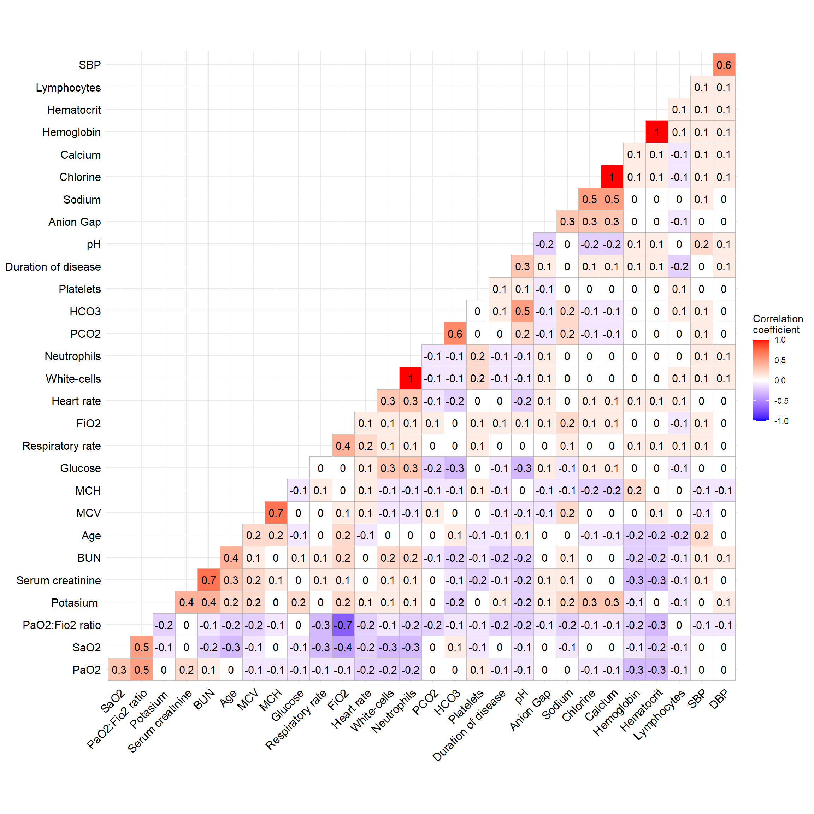
# Visualization
FS1_grey <- my_ggcorrplor_grey(corr)# Demographics characteristics and history
table_1.1 <- data |>
tbl_summary(
include = c(edad:t_de_enfermedad, a_f),
by = a_f,
percent = "column",
digits = list(all_continuous() ~ c(1, 1))) |>
add_overall() |>
add_p() |>
bold_p(t = 0.05) |>
modify_header(all_stat_cols() ~ "**{level}** (n = {n})",
stat_0 = "**All patients** (n = {N})",
p.value = "**p value**") |>
modify_spanning_header(all_stat_cols(stat_0 = FALSE) ~ "**Mortality**") |>
modify_caption("**Table 1**. Demographics and clinical characteristics of patients on admission")
# Signs and symptoms
table_1.2 <- data |>
tbl_summary(
include = c(fiebre:sensorio, a_f),
by = a_f,
percent = "column",
digits = list(all_continuous() ~ c(1, 1))) |>
modify_header(all_stat_cols() ~ "**{level}** (n = {n})") |>
add_overall() |>
add_p() |>
bold_p(t = 0.05)
# Vital signs
table_1.3 <- data |>
tbl_summary(
include = c(frecuencia_respiratoria:p_a_diastolica.c, a_f),
by = a_f,
percent = "column",
digits = list(all_continuous() ~ c(1, 1))) |>
modify_header(all_stat_cols() ~ "**{level}** (n = {n})") |>
add_overall() |>
add_p() |>
bold_p(t = 0.05)
# Stack tables
table_1 = tbl_stack(
list(table_1.1, table_1.2, table_1.3),
group_header = c(
"Demographics characteristics and history",
"Signs and symtoms",
"Vital signs"),
quiet = TRUE)
# Convert gtsummary object to a flextable object and format character columns
flex_table_1 <- table_1 |>
gtsummary::as_flex_table() |>
my_flextable_theme() |>
flextable::fontsize(part = "all", size = 10) |>
ftExtra::colformat_md()
# View (gtsummary object)
table_1| Characteristic | All patients (n = 287)1 | Mortality | p value2 | |
|---|---|---|---|---|
| Survivor (n = 155)1 | Non-survivor (n = 132)1 | |||
| Demographics characteristics and history | ||||
| Age (years) | 60.0 (51.0, 68.0) | 56.0 (47.0, 64.5) | 64.5 (57.8, 73.0) | <0.001 |
| Age (years) | <0.001 | |||
| < 61 | 149 (51.9%) | 102 (65.8%) | 47 (35.6%) | |
| >= 61 | 138 (48.1%) | 53 (34.2%) | 85 (64.4%) | |
| Sex | 0.46 | |||
| Female | 98 (34.1%) | 50 (32.3%) | 48 (36.4%) | |
| Male | 189 (65.9%) | 105 (67.7%) | 84 (63.6%) | |
| Smoking | 2 (0.7%) | 1 (0.6%) | 1 (0.8%) | >0.99 |
| Alcoholism | 2 (0.7%) | 1 (0.6%) | 1 (0.8%) | >0.99 |
| Dyslipidemia | 4 (1.4%) | 3 (1.9%) | 1 (0.8%) | 0.63 |
| Obesity | 44 (15.3%) | 29 (18.7%) | 15 (11.4%) | 0.085 |
| Hypertension | 102 (35.5%) | 43 (27.7%) | 59 (44.7%) | 0.003 |
| Cerebrovascular disease | 4 (1.4%) | 0 (0.0%) | 4 (3.0%) | 0.044 |
| Cancer | 1 (0.3%) | 0 (0.0%) | 1 (0.8%) | 0.46 |
| HIV | 1 (0.3%) | 0 (0.0%) | 1 (0.8%) | 0.46 |
| Immunesupressive disease | 3 (1.0%) | 1 (0.6%) | 2 (1.5%) | 0.60 |
| Chronic renal disease | 10 (3.5%) | 5 (3.2%) | 5 (3.8%) | >0.99 |
| Hemodialysis | 5 (1.9%) | 1 (0.8%) | 4 (3.0%) | 0.37 |
| Asthma | 6 (2.1%) | 4 (2.6%) | 2 (1.5%) | 0.69 |
| Duration of disease (days) | 7.0 (5.0, 10.0) | 7.0 (5.0, 10.0) | 7.0 (5.0, 10.0) | 0.23 |
| Signs and symtoms | ||||
| Fever | 170 (59.2%) | 82 (52.9%) | 88 (66.7%) | 0.018 |
| Dry cought | 218 (76.0%) | 113 (72.9%) | 105 (79.5%) | 0.19 |
| Sore throat | 92 (32.1%) | 59 (38.1%) | 33 (25.0%) | 0.018 |
| General malaise | 206 (71.8%) | 115 (74.2%) | 91 (68.9%) | 0.32 |
| Headache | 62 (21.6%) | 49 (31.6%) | 13 (9.8%) | <0.001 |
| Tachypnea | 99 (34.5%) | 65 (41.9%) | 34 (25.8%) | 0.004 |
| Dyspnea | 242 (84.3%) | 120 (77.4%) | 122 (92.4%) | <0.001 |
| Anosmia | 16 (5.6%) | 11 (7.1%) | 5 (3.8%) | 0.22 |
| Dysgeusia | 13 (4.5%) | 8 (5.2%) | 5 (3.8%) | 0.58 |
| Lung crackles | 141 (49.1%) | 91 (58.7%) | 50 (37.9%) | <0.001 |
| Diarrhea | 18 (6.3%) | 8 (5.2%) | 10 (7.6%) | 0.40 |
| Vomiting | 17 (5.9%) | 6 (3.9%) | 11 (8.3%) | 0.11 |
| Asthenia | 48 (16.7%) | 34 (21.9%) | 14 (10.6%) | 0.010 |
| Abdominal pain | 12 (4.2%) | 8 (5.2%) | 4 (3.0%) | 0.37 |
| Weight loss | 3 (1.0%) | 3 (1.9%) | 0 (0.0%) | 0.25 |
| Polyuria | 12 (4.2%) | 9 (5.8%) | 3 (2.3%) | 0.14 |
| Polidipsia | 10 (3.5%) | 8 (5.2%) | 2 (1.5%) | 0.11 |
| Poliphagia | 5 (1.7%) | 4 (2.6%) | 1 (0.8%) | 0.38 |
| Sensory | <0.001 | |||
| Awake | 250 (91.2%) | 151 (97.4%) | 99 (83.2%) | |
| Sleepy | 17 (6.2%) | 3 (1.9%) | 14 (11.8%) | |
| Drowsy | 7 (2.6%) | 1 (0.6%) | 6 (5.0%) | |
| Vital signs | ||||
| Respiratory rate (BPM) | 26.0 (23.0, 30.0) | 26.0 (22.3, 28.0) | 28.0 (24.0, 32.0) | <0.001 |
| Respiratory rate (BPM) | 0.006 | |||
| 24 - 30 | 138 (51.7%) | 76 (52.1%) | 62 (51.2%) | |
| < 24 | 70 (26.2%) | 47 (32.2%) | 23 (19.0%) | |
| > 30 | 59 (22.1%) | 23 (15.8%) | 36 (29.8%) | |
| Heart rate (BPM) | 100.0 (85.8, 113.0) | 98.0 (82.3, 107.8) | 105.5 (92.0, 115.8) | <0.001 |
| Heart rate (BPM) | <0.001 | |||
| < 100 | 133 (46.3%) | 86 (55.5%) | 47 (35.6%) | |
| >= 100 | 154 (53.7%) | 69 (44.5%) | 85 (64.4%) | |
| SBP (mmHg) | 115.0 (100.0, 130.0) | 110.0 (100.0, 120.0) | 120.0 (100.0, 130.0) | 0.25 |
| SBP (mmHg) | 0.002 | |||
| < 140 | 246 (85.7%) | 142 (91.6%) | 104 (78.8%) | |
| >= 140 | 41 (14.3%) | 13 (8.4%) | 28 (21.2%) | |
| DBP (mmHg) | 70.0 (60.0, 80.0) | 70.0 (60.0, 80.0) | 70.0 (60.0, 80.0) | 0.13 |
| DBP (mmHg) | 0.009 | |||
| < 90 | 258 (89.9%) | 146 (94.2%) | 112 (84.8%) | |
| >= 90 | 29 (10.1%) | 9 (5.8%) | 20 (15.2%) | |
| 1 Median (IQR); n (%) | ||||
| 2 Wilcoxon rank sum test; Pearson’s Chi-squared test; Fisher’s exact test | ||||
# Laboratory findings
table_2.1 <- data |>
tbl_summary(
include = c(leucocitos:calcio, a_f),
by = a_f,
percent = "column",
digits = list(all_continuous() ~ c(1, 1))) |>
add_overall() |>
add_p() |>
bold_p(t = 0.05) |>
modify_header(all_stat_cols() ~ "**{level}** (n = {n})",
stat_0 = "**All patients** (n = {N})",
p.value = "**p value**") |>
modify_column_alignment(columns = everything(), align = "left") |>
modify_spanning_header(all_stat_cols(stat_0 = FALSE) ~ "**Mortality**") |>
modify_caption("Table 2. Laboratory findings and treatment of patients on admission")
# Blood gas findings
table_2.2 <- data |>
tbl_summary(
include = c(saturacion_de_oxigeno:hco3.c, a_f),
by = a_f,
percent = "column",
digits = list(all_continuous() ~ c(1, 1))) |>
modify_header(all_stat_cols() ~ "**{level}** (n = {n})") |>
add_overall() |>
add_p() |>
bold_p(t = 0.05)
# Treatments
table_2.3 <- data |>
tbl_summary(
include = c(antibioticos:pronacion, a_f),
by = a_f,
percent = "column",
digits = list(all_continuous() ~ c(1, 1))) |>
modify_header(all_stat_cols() ~ "**{level}** (n = {n})") |>
add_overall() |>
add_p() |>
bold_p(t = 0.05)
# Stack tables
table_2 = tbl_stack(
list(table_2.1, table_2.2, table_2.3),
group_header = c("Laboratory findings", "Blood gas findings", "Treatment"),
quiet = TRUE)
# Convert gtsummary object to a flextable object and format character columns
flex_table_2 <- table_2 |>
gtsummary::as_flex_table() |>
my_flextable_theme() |>
flextable::fontsize(part = "all", size = 10) |>
ftExtra::colformat_md()
# View
flex_table_2
| Mortality |
| |||
|---|---|---|---|---|---|
Group | Characteristic | All patients (n = 287)1 | Survivor (n = 155)1 | Non-survivor (n = 132)1 | p value2 |
Laboratory findings | White-cells (×10−9/L) | 10.6 (7.8, 16.6) | 9.0 (6.5, 13.1) | 14.5 (10.0, 19.2) | <0.001 |
White-cells (×10−9/L) | <0.001 | ||||
4-10 | 104 (38.7%) | 75 (50.3%) | 29 (24.2%) | ||
< 4 | 19 (7.1%) | 15 (10.1%) | 4 (3.3%) | ||
10 | 146 (54.3%) | 59 (39.6%) | 87 (72.5%) | ||
Neutrophils (×10−9/L) | 9.0 (6.0, 14.8) | 7.2 (4.5, 11.7) | 13.0 (8.8, 17.9) | <0.001 | |
Neutrophils (×10−9/L) | <0.001 | ||||
<= 6.3 | 91 (31.7%) | 67 (43.2%) | 24 (18.2%) | ||
6.3 | 196 (68.3%) | 88 (56.8%) | 108 (81.8%) | ||
Lymphocytes (×10−9/L) | 0.9 (0.6, 1.3) | 1.0 (0.7, 1.5) | 0.7 (0.4, 1.2) | <0.001 | |
Lymphocytes (×10−9/L) | 0.010 | ||||
= 1 | 141 (49.1%) | 87 (56.1%) | 54 (40.9%) | ||
< 1 | 146 (50.9%) | 68 (43.9%) | 78 (59.1%) | ||
Platelets (×10−9/L) | 254.5 (193.5, 342.0) | 255.0 (190.0, 344.0) | 251.0 (200.0, 331.0) | 0.93 | |
Platelets (×10−9/L) | 0.88 | ||||
= 125 | 266 (92.7%) | 144 (92.9%) | 122 (92.4%) | ||
< 125 | 21 (7.3%) | 11 (7.1%) | 10 (7.6%) | ||
MCV (mm3) | 90.9 (87.7, 93.6) | 90.2 (87.2, 92.8) | 91.3 (88.2, 94.4) | 0.048 | |
MCH (pg) | 29.3 (28.1, 30.3) | 29.2 (27.9, 30.1) | 29.4 (28.4, 30.6) | 0.045 | |
Hemoglobin (g/dL) | 13.7 (12.0, 14.9) | 13.7 (12.6, 15.0) | 13.7 (11.4, 14.9) | 0.42 | |
Hemoglobin (g/dL) | 0.022 | ||||
12 | 216 (75.3%) | 125 (80.6%) | 91 (68.9%) | ||
<= 12 | 71 (24.7%) | 30 (19.4%) | 41 (31.1%) | ||
Hematocrit (%) | 42.0 (37.5, 46.0) | 42.7 (38.5, 46.0) | 41.7 (35.3, 46.0) | 0.23 | |
Hematocrit (%) | 0.031 | ||||
= 36 | 229 (79.8%) | 131 (84.5%) | 98 (74.2%) | ||
< 36 | 58 (20.2%) | 24 (15.5%) | 34 (25.8%) | ||
Serum creatinine (mg/dL) | 0.8 (0.6, 1.2) | 0.7 (0.6, 1.0) | 1.0 (0.7, 1.5) | <0.001 | |
Serum creatinine (mg/dL) | 0.001 | ||||
< 1.3 | 213 (74.2%) | 127 (81.9%) | 86 (65.2%) | ||
= 1.3 | 74 (25.8%) | 28 (18.1%) | 46 (34.8%) | ||
BUN (mg/dL) | 36.1 (26.8, 52.0) | 32.0 (24.0, 44.0) | 42.5 (30.0, 56.5) | <0.001 | |
BUN (mg/dL) | 0.025 | ||||
< 20 | 30 (10.5%) | 22 (14.2%) | 8 (6.1%) | ||
= 20 | 257 (89.5%) | 133 (85.8%) | 124 (93.9%) | ||
Glucose (mg/dL) | 239.0 (171.0, 309.0) | 228.0 (157.0, 296.5) | 249.0 (195.3, 318.0) | 0.18 | |
pH | 7.4 (7.4, 7.5) | 7.4 (7.4, 7.5) | 7.4 (7.4, 7.5) | 0.28 | |
pH | 0.37 | ||||
7.35 - 7.45 | 173 (62.0%) | 92 (60.9%) | 81 (63.3%) | ||
< 7.35 | 42 (15.1%) | 20 (13.2%) | 22 (17.2%) | ||
7.45 | 64 (22.9%) | 39 (25.8%) | 25 (19.5%) | ||
Anion Gap (mEq/L) | 10.5 (7.1, 14.0) | 10.0 (6.4, 13.4) | 11.4 (7.8, 14.4) | 0.057 | |
Anion Gap (mEq/L) | 0.16 | ||||
7 - 13 | 128 (46.5%) | 68 (45.3%) | 60 (48.0%) | ||
< 7 | 67 (24.4%) | 43 (28.7%) | 24 (19.2%) | ||
13 | 80 (29.1%) | 39 (26.0%) | 41 (32.8%) | ||
Sodium (mmol/L) | 137.0 (133.0, 142.0) | 137.0 (133.5, 142.0) | 137.0 (133.0, 142.0) | 0.65 | |
Potasium (mEq/L) | 3.8 (3.5, 4.2) | 3.8 (3.6, 4.1) | 4.0 (3.5, 4.4) | 0.057 | |
Chlorine (mmol/L) | 1.2 (1.1, 1.2) | 1.2 (1.1, 1.2) | 1.2 (1.1, 1.2) | 0.34 | |
Calcium (mmol/L) | 1.2 (1.1, 1.2) | 1.2 (1.1, 1.2) | 1.2 (1.1, 1.2) | 0.34 | |
Blood gas findings | SaO2 (%) | 90.0 (83.0, 94.0) | 92.0 (88.0, 95.0) | 85.0 (78.0, 91.3) | <0.001 |
SaO2 | 0.020 | ||||
= 94 | 80 (27.9%) | 52 (33.5%) | 28 (21.2%) | ||
< 94 | 207 (72.1%) | 103 (66.5%) | 104 (78.8%) | ||
FiO2 (%) | 40.0 (21.0, 80.0) | 38.0 (21.0, 40.0) | 80.0 (32.0, 80.0) | <0.001 | |
FiO2 (%) | 0.23 | ||||
21 (O2 therapy) | 203 (70.7%) | 105 (67.7%) | 98 (74.2%) | ||
21 | 84 (29.3%) | 50 (32.3%) | 34 (25.8%) | ||
PaO2:FiO2 ratio | 191.0 (95.1, 298.0) | 238.5 (145.0, 325.3) | 123.0 (77.6, 249.5) | <0.001 | |
PaO2:FiO2 ratio | <0.001 | ||||
200 | 135 (47.0%) | 88 (56.8%) | 47 (35.6%) | ||
<= 200 | 152 (53.0%) | 67 (43.2%) | 85 (64.4%) | ||
PaO2 (mmHg) | 73.1 (61.0, 91.0) | 78.0 (68.0, 93.9) | 64.9 (52.2, 80.5) | <0.001 | |
PaO2 | <0.001 | ||||
= 60 | 223 (77.7%) | 141 (91.0%) | 82 (62.1%) | ||
< 60 | 64 (22.3%) | 14 (9.0%) | 50 (37.9%) | ||
PCO2 (mmHg) | 31.4 (27.9, 35.0) | 32.2 (28.9, 35.0) | 30.2 (26.4, 35.0) | 0.021 | |
PCO2 (mmHg) | 0.55 | ||||
< 36 | 222 (77.4%) | 122 (78.7%) | 100 (75.8%) | ||
= 36 | 65 (22.6%) | 33 (21.3%) | 32 (24.2%) | ||
HCO3 (mmol/L) | 20.7 (17.9, 23.0) | 21.1 (19.7, 23.1) | 19.9 (16.0, 22.5) | 0.003 | |
HCO3 (mEq/L) | 0.032 | ||||
21 - 28 | 119 (42.8%) | 75 (50.0%) | 44 (34.4%) | ||
< 21 | 148 (53.2%) | 70 (46.7%) | 78 (60.9%) | ||
28 | 11 (4.0%) | 5 (3.3%) | 6 (4.7%) | ||
Treatment | Antibiotics | 278 (96.9%) | 146 (94.2%) | 132 (100.0%) | 0.004 |
Corticosteroids | 208 (72.5%) | 97 (62.6%) | 111 (84.1%) | <0.001 | |
Anticoagulants | <0.001 | ||||
No | 55 (19.2%) | 41 (26.5%) | 14 (10.6%) | ||
Enoxaparin | 232 (80.8%) | 114 (73.5%) | 118 (89.4%) | ||
Antiparasitics | 0.085 | ||||
No | 231 (80.5%) | 119 (76.8%) | 112 (84.8%) | ||
Ivermectin | 56 (19.5%) | 36 (23.2%) | 20 (15.2%) | ||
Antimalarials | 0.003 | ||||
No | 162 (56.4%) | 100 (64.5%) | 62 (47.0%) | ||
Hydroxychloroquine | 125 (43.6%) | 55 (35.5%) | 70 (53.0%) | ||
Pronation | 115 (44.1%) | 61 (47.3%) | 54 (40.9%) | 0.30 | |
1Median (IQR); n (%) | |||||
2Wilcoxon rank sum test; Pearson's Chi-squared test | |||||
In the univariate analysis, self-reported or not enough event variables were eliminated, this will help to avoid overfitting in the subsequent multivariate analysis. Other variables such as plaquetas, plaquetas.c, hemoglobina, hematocrito, glucosa, ph, ph.c, anion_gap, anion_gap.c, sodio, potasio, cloro, and calcio, fio2_aga.c, pco2.c, antiparasitarios, and pronacion, showed no differences between groups in the bivariate analysis (Table 2).
| Self-reported | Not enough event (<10) |
|---|---|
| dolor_de_garganta, malestar_general, cefalea, anosmia, disgeusia, astenia, dolor_abdominal, perdida_de_peso, sensorio. | tabaquismo, alcoholismo, dislipidemia, ecv, neoplasia, vih, e_inmunosupresora, erc, hemodialisis, asma_bronquial, anosmia, disgeusia, diarrrea, emesis, poliuria, polidipsia, polifagia, sensorio, ingreso_a_uci, antibioticos. |
data_uv <- data |>
dplyr::select(
# Demographics characteristics and history
edad.c,
sexo,
obesidad,
hta,
# Signs and symptoms
fiebre,
tos,
taquipnea,
disnea,
estertores_pulmonares,
# Vital signs
frecuencia_respiratoria.c,
frecuencia_cardiaca.c,
p_a_sistolica.c,
p_a_diastolica.c,
# Laboratory findings
leucocitos.c,
neutrofilos.c,
linfocitos.c,
plaquetas.c,
mcv,
mch,
hemoglobina.c,
hematocrito.c,
creatinina.c,
urea.c,
# Blood gas findings
saturacion_de_oxigeno.c,
fio2_aga,
pafi.c,
po2.c,
pco2,
hco3.c,
# Treatment
corticoides,
anticoagulantes,
antiparasitarios,
antipaludicos,
pronacion,
# outcomes
a_f
) |>
na.omit() # Eliminate 82 observationsNote: All variables included in the formula are based on bivariate analysis.
table_3.1 <- data_uv |>
tbl_uvregression(
include = c(edad.c:pronacion),
y = a_f,
method = glm,
method.args = list(family = binomial),
exponentiate = TRUE,
conf.int = TRUE,
hide_n = TRUE,
add_estimate_to_reference_rows = FALSE,
pvalue_fun = ~ style_pvalue(.x, digits = 3),
estimate_fun = ~ style_number(.x, digits = 2),
label = list(
edad.c ~ "Age (years)",
sexo ~ "Sex",
obesidad ~ "Obesity",
hta ~ "Hypertension",
fiebre ~ "Fever",
tos ~ "Dry cought",
taquipnea ~ "Tachypnea",
disnea ~ "Dyspnea",
estertores_pulmonares ~ "Lung crackles",
frecuencia_respiratoria.c ~ "Respiratory rate (BPM)",
frecuencia_cardiaca.c ~ "Heart rate (BPM)",
p_a_sistolica.c ~ "SBP (mmHg)",
p_a_diastolica.c ~ "DBP (mmHg)",
leucocitos.c ~ "White-cells (×10^−9^/L)",
neutrofilos.c ~ "Neutrophils (×10^−9^/L)",
linfocitos.c ~ "Lymphocytes (×10^−9^/L)",
plaquetas.c ~ "Platelets (×10^−9^/L)",
mcv ~ "MCV (mm^3^)",
mch ~ "MCH (pg)",
hemoglobina.c ~ "Hemoglobin (g/dL)",
hematocrito.c ~ "Hematocrit (%)",
creatinina.c ~ "Serum creatinine (mg/dL)",
urea.c ~ "BUN (mg/dL)",
saturacion_de_oxigeno.c ~ "SaO~2~",
fio2_aga ~ "FiO~2~ (%)",
pafi.c ~ "PaO~2~:FiO~2~ ratio",
po2.c ~ "PaO~2~ (mmHg)",
pco2 ~ "PCO~2~ (mmHg)",
hco3.c ~ "HCO~3~ (mmol/L)",
corticoides ~ "Corticosteroids",
anticoagulantes ~ "Anticoagulants",
antiparasitarios ~ "Antiparasitics",
antipaludicos ~ "Antimalarials",
pronacion ~ "Pronation")) |>
bold_labels() |>
bold_p(t = 0.05) |>
modify_header(estimate = "**Univariable OR (95% CI)**",
p.value = "**p value**")# Model
full_multivariable <-
glm(
a_f ~ edad.c + sexo + obesidad + hta + fiebre + tos + taquipnea + disnea +
estertores_pulmonares + frecuencia_respiratoria.c + frecuencia_cardiaca.c +
p_a_sistolica.c + p_a_diastolica.c + leucocitos.c + neutrofilos.c +
linfocitos.c + plaquetas.c + mcv + mch + hemoglobina.c + hematocrito.c +
creatinina.c + urea.c + saturacion_de_oxigeno.c + fio2_aga + pafi.c +
po2.c + pco2 + hco3.c + corticoides + anticoagulantes + antiparasitarios +
antipaludicos + pronacion,
data = data_uv,
family = binomial(link = "logit")) |>
tbl_regression(
exponentiate = TRUE,
conf.int = TRUE,
pvalue_fun = ~ style_pvalue(.x, digits = 3),
estimate_fun = ~ style_number(.x, digits = 2)) |>
bold_p(t = 0.05) |>
# Add Generalized Variance Inflation Factor (GVIF)
add_vif()# Model
m1 = glm(
a_f ~ edad.c + sexo + obesidad + hta + fiebre + tos + taquipnea + disnea +
estertores_pulmonares + frecuencia_respiratoria.c + frecuencia_cardiaca.c +
p_a_sistolica.c + p_a_diastolica.c + leucocitos.c + neutrofilos.c +
linfocitos.c + plaquetas.c + mcv + mch + hemoglobina.c + hematocrito.c +
creatinina.c + urea.c + saturacion_de_oxigeno.c + fio2_aga + pafi.c +
po2.c + pco2 + hco3.c + corticoides + anticoagulantes + antiparasitarios +
antipaludicos + pronacion,
data = data_uv,
family = binomial(link = "logit"))
# Visual check of model assumptions
performance::check_model(m1)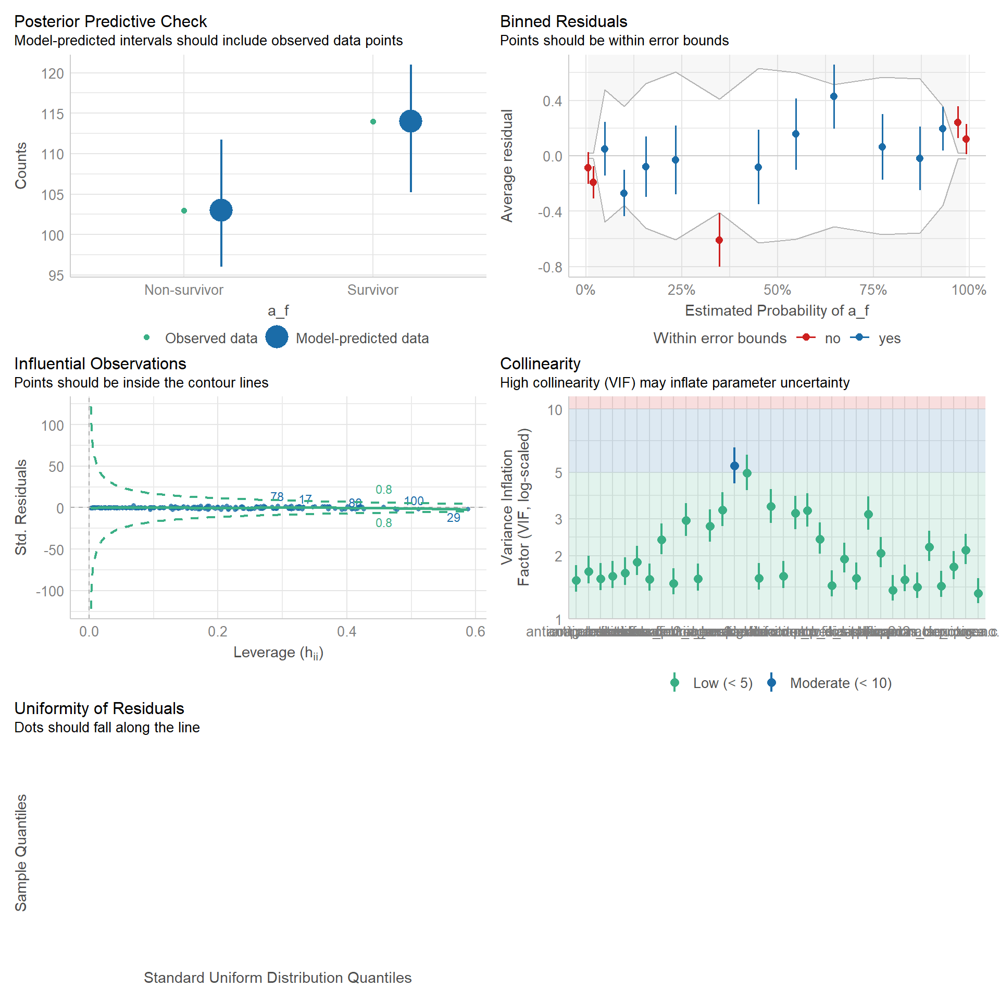
# Indices of model performance
performance::model_performance(m1)# Indices of model performance
AIC | AICc | BIC | Tjur's R2 | RMSE | Sigma | Log_loss | Score_log | Score_spherical | PCP
--------------------------------------------------------------------------------------------------------
238.569 | 255.220 | 367.005 | 0.517 | 0.347 | 1.000 | 0.375 | -123.763 | 0.020 | 0.759# Check for Multicollinearity
performance::check_collinearity(m1)# Check for Multicollinearity
Low Correlation
Term VIF VIF 95% CI Increased SE Tolerance
edad.c 1.55 [1.36, 1.83] 1.24 0.65
sexo 1.43 [1.27, 1.69] 1.20 0.70
obesidad 1.44 [1.28, 1.71] 1.20 0.69
hta 1.56 [1.38, 1.85] 1.25 0.64
fiebre 1.48 [1.31, 1.75] 1.22 0.68
tos 2.13 [1.82, 2.54] 1.46 0.47
taquipnea 1.78 [1.54, 2.11] 1.33 0.56
disnea 1.87 [1.62, 2.22] 1.37 0.54
estertores_pulmonares 2.38 [2.03, 2.86] 1.54 0.42
frecuencia_respiratoria.c 2.76 [2.34, 3.33] 1.66 0.36
frecuencia_cardiaca.c 1.55 [1.36, 1.83] 1.24 0.65
p_a_sistolica.c 1.57 [1.38, 1.85] 1.25 0.64
p_a_diastolica.c 1.93 [1.67, 2.30] 1.39 0.52
leucocitos.c 3.43 [2.87, 4.16] 1.85 0.29
neutrofilos.c 2.40 [2.04, 2.88] 1.55 0.42
linfocitos.c 1.60 [1.40, 1.89] 1.26 0.63
plaquetas.c 1.37 [1.22, 1.62] 1.17 0.73
mcv 3.28 [2.75, 3.98] 1.81 0.30
mch 3.19 [2.68, 3.86] 1.79 0.31
hemoglobina.c 4.97 [4.11, 6.07] 2.23 0.20
creatinina.c 1.65 [1.45, 1.96] 1.29 0.60
urea.c 1.32 [1.19, 1.56] 1.15 0.76
saturacion_de_oxigeno.c 2.20 [1.88, 2.63] 1.48 0.45
fio2_aga 2.95 [2.48, 3.56] 1.72 0.34
pafi.c 3.16 [2.66, 3.82] 1.78 0.32
po2.c 1.53 [1.35, 1.81] 1.24 0.65
pco2 2.05 [1.76, 2.45] 1.43 0.49
hco3.c 3.31 [2.77, 4.00] 1.82 0.30
corticoides 1.60 [1.40, 1.89] 1.26 0.63
anticoagulantes 1.53 [1.35, 1.81] 1.24 0.65
antiparasitarios 1.56 [1.37, 1.84] 1.25 0.64
antipaludicos 1.69 [1.47, 2.00] 1.30 0.59
pronacion 1.41 [1.26, 1.67] 1.19 0.71
Tolerance 95% CI
[0.55, 0.73]
[0.59, 0.79]
[0.59, 0.78]
[0.54, 0.73]
[0.57, 0.76]
[0.39, 0.55]
[0.47, 0.65]
[0.45, 0.62]
[0.35, 0.49]
[0.30, 0.43]
[0.55, 0.73]
[0.54, 0.73]
[0.43, 0.60]
[0.24, 0.35]
[0.35, 0.49]
[0.53, 0.71]
[0.62, 0.82]
[0.25, 0.36]
[0.26, 0.37]
[0.16, 0.24]
[0.51, 0.69]
[0.64, 0.84]
[0.38, 0.53]
[0.28, 0.40]
[0.26, 0.38]
[0.55, 0.74]
[0.41, 0.57]
[0.25, 0.36]
[0.53, 0.71]
[0.55, 0.74]
[0.54, 0.73]
[0.50, 0.68]
[0.60, 0.80]
Moderate Correlation
Term VIF VIF 95% CI Increased SE Tolerance Tolerance 95% CI
hematocrito.c 5.37 [4.43, 6.56] 2.32 0.19 [0.15, 0.23]mv_reg_stepbackward <- m1 |>
step(direction = "backward", trace = FALSE)# Forward model
mv_reg_stepforward <- m1 |>
step(direction = "forward", trace = FALSE)
# Forward formula-based model
m2 <- glm(
a_f ~ edad.c + sexo + obesidad + hta + fiebre + tos + taquipnea + disnea +
estertores_pulmonares + frecuencia_respiratoria.c + frecuencia_cardiaca.c +
p_a_sistolica.c + p_a_diastolica.c + leucocitos.c + neutrofilos.c +
linfocitos.c + plaquetas.c + mcv + mch + hemoglobina.c + hematocrito.c +
creatinina.c + urea.c + saturacion_de_oxigeno.c + fio2_aga + pafi.c +
po2.c + pco2 + hco3.c + corticoides + anticoagulantes + antiparasitarios +
antipaludicos + pronacion,
data = data_uv,
family = binomial(link = "logit"))
# Visual check of model assumptions
performance::check_model(m2)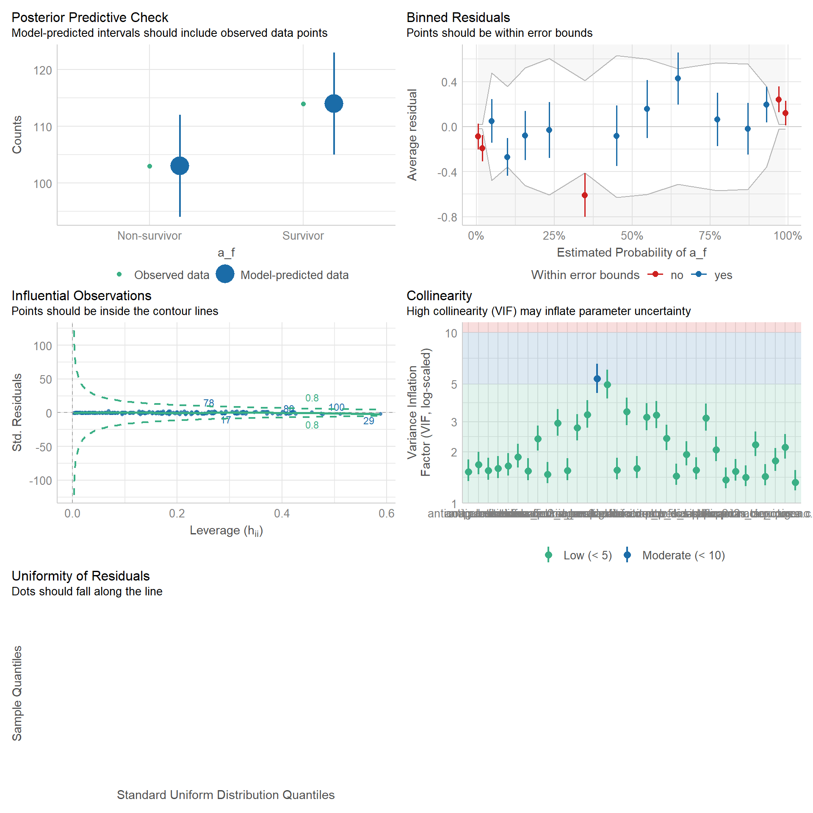
# Indices of model performance
performance::model_performance(m2)# Indices of model performance
AIC | AICc | BIC | Tjur's R2 | RMSE | Sigma | Log_loss | Score_log | Score_spherical | PCP
--------------------------------------------------------------------------------------------------------
238.569 | 255.220 | 367.005 | 0.517 | 0.347 | 1.000 | 0.375 | -123.763 | 0.020 | 0.759# Check for Multicollinearity
performance::check_collinearity(m2)# Check for Multicollinearity
Low Correlation
Term VIF VIF 95% CI Increased SE Tolerance
edad.c 1.55 [1.36, 1.83] 1.24 0.65
sexo 1.43 [1.27, 1.69] 1.20 0.70
obesidad 1.44 [1.28, 1.71] 1.20 0.69
hta 1.56 [1.38, 1.85] 1.25 0.64
fiebre 1.48 [1.31, 1.75] 1.22 0.68
tos 2.13 [1.82, 2.54] 1.46 0.47
taquipnea 1.78 [1.54, 2.11] 1.33 0.56
disnea 1.87 [1.62, 2.22] 1.37 0.54
estertores_pulmonares 2.38 [2.03, 2.86] 1.54 0.42
frecuencia_respiratoria.c 2.76 [2.34, 3.33] 1.66 0.36
frecuencia_cardiaca.c 1.55 [1.36, 1.83] 1.24 0.65
p_a_sistolica.c 1.57 [1.38, 1.85] 1.25 0.64
p_a_diastolica.c 1.93 [1.67, 2.30] 1.39 0.52
leucocitos.c 3.43 [2.87, 4.16] 1.85 0.29
neutrofilos.c 2.40 [2.04, 2.88] 1.55 0.42
linfocitos.c 1.60 [1.40, 1.89] 1.26 0.63
plaquetas.c 1.37 [1.22, 1.62] 1.17 0.73
mcv 3.28 [2.75, 3.98] 1.81 0.30
mch 3.19 [2.68, 3.86] 1.79 0.31
hemoglobina.c 4.97 [4.11, 6.07] 2.23 0.20
creatinina.c 1.65 [1.45, 1.96] 1.29 0.60
urea.c 1.32 [1.19, 1.56] 1.15 0.76
saturacion_de_oxigeno.c 2.20 [1.88, 2.63] 1.48 0.45
fio2_aga 2.95 [2.48, 3.56] 1.72 0.34
pafi.c 3.16 [2.66, 3.82] 1.78 0.32
po2.c 1.53 [1.35, 1.81] 1.24 0.65
pco2 2.05 [1.76, 2.45] 1.43 0.49
hco3.c 3.31 [2.77, 4.00] 1.82 0.30
corticoides 1.60 [1.40, 1.89] 1.26 0.63
anticoagulantes 1.53 [1.35, 1.81] 1.24 0.65
antiparasitarios 1.56 [1.37, 1.84] 1.25 0.64
antipaludicos 1.69 [1.47, 2.00] 1.30 0.59
pronacion 1.41 [1.26, 1.67] 1.19 0.71
Tolerance 95% CI
[0.55, 0.73]
[0.59, 0.79]
[0.59, 0.78]
[0.54, 0.73]
[0.57, 0.76]
[0.39, 0.55]
[0.47, 0.65]
[0.45, 0.62]
[0.35, 0.49]
[0.30, 0.43]
[0.55, 0.73]
[0.54, 0.73]
[0.43, 0.60]
[0.24, 0.35]
[0.35, 0.49]
[0.53, 0.71]
[0.62, 0.82]
[0.25, 0.36]
[0.26, 0.37]
[0.16, 0.24]
[0.51, 0.69]
[0.64, 0.84]
[0.38, 0.53]
[0.28, 0.40]
[0.26, 0.38]
[0.55, 0.74]
[0.41, 0.57]
[0.25, 0.36]
[0.53, 0.71]
[0.55, 0.74]
[0.54, 0.73]
[0.50, 0.68]
[0.60, 0.80]
Moderate Correlation
Term VIF VIF 95% CI Increased SE Tolerance Tolerance 95% CI
hematocrito.c 5.37 [4.43, 6.56] 2.32 0.19 [0.15, 0.23]# Backward model
mv_reg_stepbackward <- m1 |>
step(direction = "backward", trace = FALSE)
# Backward formula-based model
m3 <-
glm(
a_f ~ disnea + estertores_pulmonares + frecuencia_respiratoria.c +
frecuencia_cardiaca.c + p_a_sistolica.c + neutrofilos.c + linfocitos.c +
mcv + mch + hematocrito.c + fio2_aga + po2.c + corticoides + pronacion,
data = data_uv,
family = binomial(link = "logit"))
# Visual check of model assumptions
performance::check_model(m3)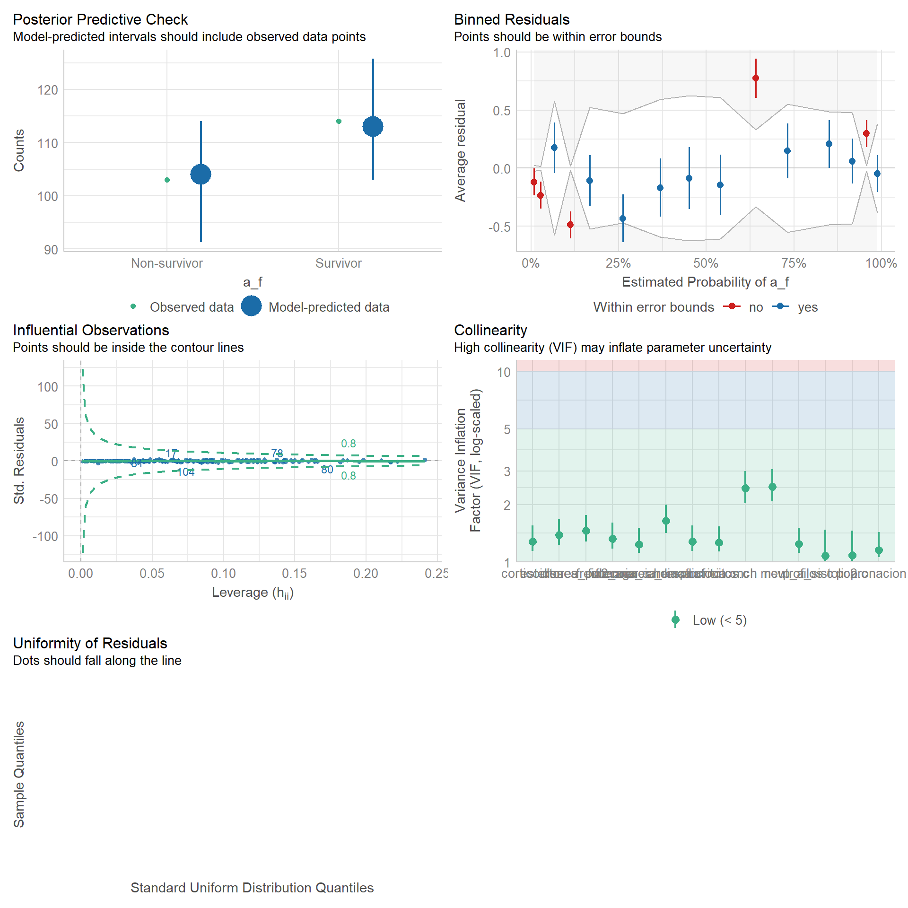
# Indices of model performance
performance::model_performance(m3)# Indices of model performance
AIC | AICc | BIC | Tjur's R2 | RMSE | Sigma | Log_loss | Score_log | Score_spherical | PCP
--------------------------------------------------------------------------------------------------------
205.935 | 208.655 | 260.013 | 0.489 | 0.354 | 1.000 | 0.401 | -114.684 | 0.017 | 0.745# Check for Multicollinearity
performance::check_collinearity(m3)# Check for Multicollinearity
Low Correlation
Term VIF VIF 95% CI Increased SE Tolerance
disnea 1.39 [1.22, 1.67] 1.18 0.72
estertores_pulmonares 1.46 [1.28, 1.76] 1.21 0.69
frecuencia_respiratoria.c 1.65 [1.42, 2.00] 1.28 0.61
frecuencia_cardiaca.c 1.24 [1.11, 1.51] 1.11 0.81
p_a_sistolica.c 1.08 [1.01, 1.47] 1.04 0.93
neutrofilos.c 1.24 [1.11, 1.51] 1.11 0.81
linfocitos.c 1.27 [1.13, 1.54] 1.12 0.79
mcv 2.49 [2.07, 3.06] 1.58 0.40
mch 2.44 [2.03, 3.00] 1.56 0.41
hematocrito.c 1.28 [1.14, 1.55] 1.13 0.78
fio2_aga 1.33 [1.18, 1.60] 1.15 0.75
po2.c 1.08 [1.01, 1.46] 1.04 0.92
corticoides 1.28 [1.14, 1.55] 1.13 0.78
pronacion 1.16 [1.06, 1.43] 1.08 0.86
Tolerance 95% CI
[0.60, 0.82]
[0.57, 0.78]
[0.50, 0.70]
[0.66, 0.90]
[0.68, 0.99]
[0.66, 0.90]
[0.65, 0.88]
[0.33, 0.48]
[0.33, 0.49]
[0.64, 0.87]
[0.62, 0.85]
[0.68, 0.99]
[0.65, 0.88]
[0.70, 0.95]# Parsimonious formula
m4 <-
glm(
a_f ~ edad.c + obesidad + hta + taquipnea + disnea + estertores_pulmonares +
frecuencia_cardiaca.c + p_a_sistolica.c + neutrofilos.c + linfocitos.c +
mch + hemoglobina.c + urea.c + saturacion_de_oxigeno.c + pafi.c + po2.c +
hco3.c + corticoides,
data = data_uv,
family = binomial(link = "logit"))
# Visual check of model assumptions
check_model(m4)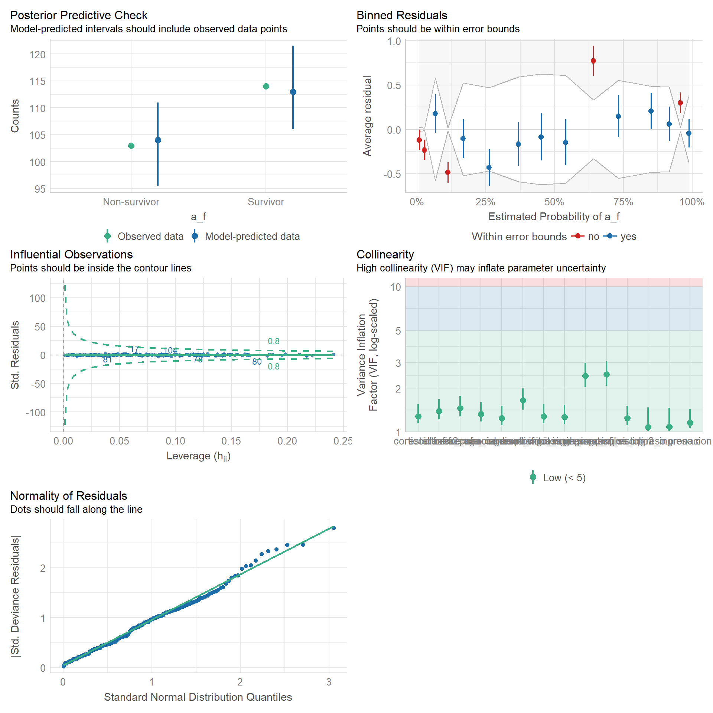
# Indices of model performance
model_performance(m4)# Indices of model performance
AIC | AICc | BIC | Tjur's R2 | RMSE | Sigma | Log_loss | Score_log | Score_spherical | PCP
--------------------------------------------------------------------------------------------------------
221.403 | 225.688 | 289.001 | 0.464 | 0.364 | 1.000 | 0.418 | -108.461 | 0.017 | 0.733# Check for Multicollinearity
check_collinearity(m4)# Check for Multicollinearity
Low Correlation
Term VIF VIF 95% CI Increased SE Tolerance
edad.c 1.21 [1.09, 1.47] 1.10 0.83
obesidad 1.20 [1.09, 1.46] 1.10 0.83
hta 1.26 [1.13, 1.53] 1.12 0.79
taquipnea 1.46 [1.28, 1.76] 1.21 0.69
disnea 1.40 [1.23, 1.68] 1.18 0.71
estertores_pulmonares 1.75 [1.50, 2.12] 1.32 0.57
frecuencia_cardiaca.c 1.22 [1.10, 1.49] 1.11 0.82
p_a_sistolica.c 1.07 [1.01, 1.47] 1.04 0.93
neutrofilos.c 1.20 [1.08, 1.46] 1.09 0.84
linfocitos.c 1.28 [1.15, 1.55] 1.13 0.78
mch 1.26 [1.13, 1.52] 1.12 0.79
hemoglobina.c 1.31 [1.17, 1.58] 1.14 0.76
urea.c 1.13 [1.04, 1.41] 1.06 0.89
saturacion_de_oxigeno.c 1.41 [1.24, 1.70] 1.19 0.71
pafi.c 1.24 [1.12, 1.51] 1.12 0.80
po2.c 1.19 [1.08, 1.46] 1.09 0.84
hco3.c 1.35 [1.20, 1.63] 1.16 0.74
corticoides 1.23 [1.11, 1.49] 1.11 0.81
Tolerance 95% CI
[0.68, 0.92]
[0.68, 0.92]
[0.66, 0.88]
[0.57, 0.78]
[0.59, 0.81]
[0.47, 0.67]
[0.67, 0.91]
[0.68, 0.99]
[0.69, 0.92]
[0.65, 0.87]
[0.66, 0.89]
[0.63, 0.86]
[0.71, 0.96]
[0.59, 0.80]
[0.66, 0.89]
[0.69, 0.92]
[0.61, 0.84]
[0.67, 0.90]# Compare performance of different models
compare_performance(m2, m3, m4, verbose = FALSE)# Comparison of Model Performance Indices
Name | Model | AIC (weights) | AICc (weights) | BIC (weights) | Tjur's R2 | RMSE | Sigma | Log_loss | Score_log | Score_spherical | PCP
------------------------------------------------------------------------------------------------------------------------------------------
m2 | glm | 238.6 (<.001) | 255.2 (<.001) | 367.0 (<.001) | 0.517 | 0.347 | 1.000 | 0.375 | -123.763 | 0.020 | 0.759
m3 | glm | 205.9 (>.999) | 208.7 (>.999) | 260.0 (>.999) | 0.489 | 0.354 | 1.000 | 0.401 | -114.684 | 0.017 | 0.745
m4 | glm | 221.4 (<.001) | 225.7 (<.001) | 289.0 (<.001) | 0.464 | 0.364 | 1.000 | 0.418 | -108.461 | 0.017 | 0.733# Radar plot
plot(compare_performance(m2, m3, m4, rank = TRUE, verbose = FALSE))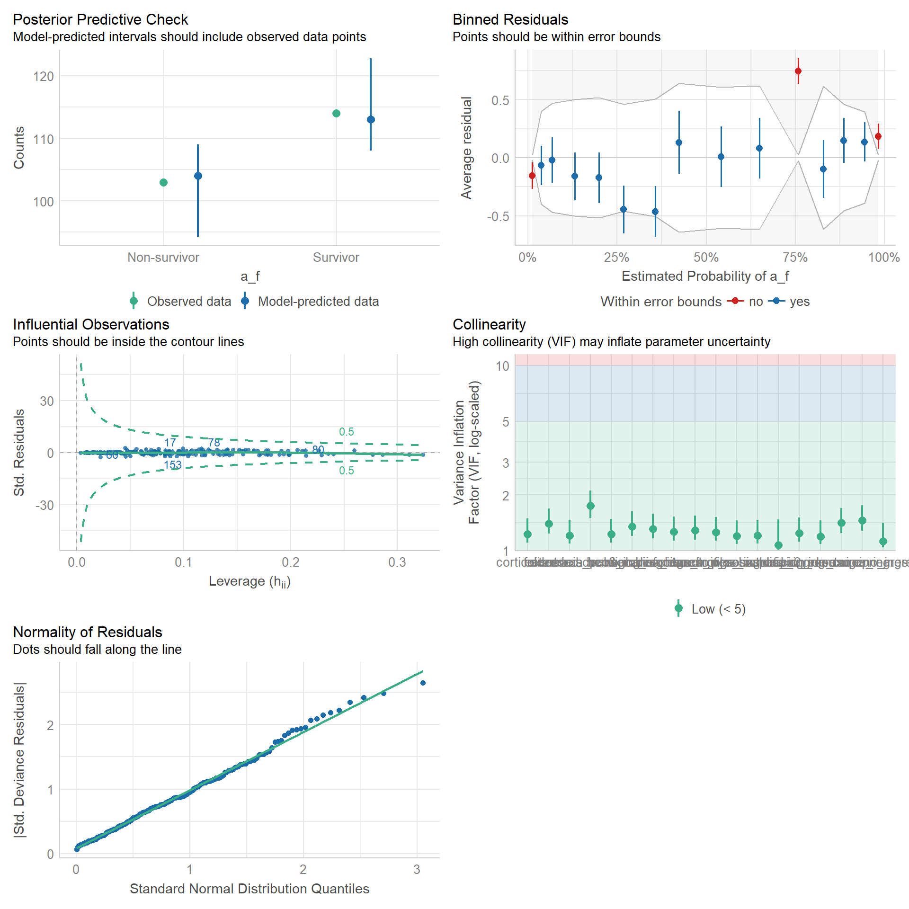
# Likelihood Ratio Test
lmtest::lrtest(m3, m4)Likelihood ratio test
Model 1: a_f ~ disnea + estertores_pulmonares + frecuencia_respiratoria.c +
frecuencia_cardiaca.c + p_a_sistolica.c + neutrofilos.c +
linfocitos.c + mcv + mch + hematocrito.c + fio2_aga + po2.c +
corticoides + pronacion
Model 2: a_f ~ edad.c + obesidad + hta + taquipnea + disnea + estertores_pulmonares +
frecuencia_cardiaca.c + p_a_sistolica.c + neutrofilos.c +
linfocitos.c + mch + hemoglobina.c + urea.c + saturacion_de_oxigeno.c +
pafi.c + po2.c + hco3.c + corticoides
#Df LogLik Df Chisq Pr(>Chisq)
1 16 -86.968
2 20 -90.701 4 7.4676 0.1131Likelihood Ratio Test (0.1131): There is insufficient evidence to conclude that the backward model is significantly better than the parsimonious model.
# Final model
table_3.2 <-
glm(
a_f ~ edad.c + obesidad + hta + taquipnea + disnea + estertores_pulmonares +
frecuencia_cardiaca.c + p_a_sistolica.c + neutrofilos.c + linfocitos.c +
mch + hemoglobina.c + urea.c + saturacion_de_oxigeno.c + pafi.c + po2.c +
hco3.c + corticoides,
family = binomial(link = "logit"),
data = data_uv
) |>
tbl_regression(
conf.int = TRUE,
exponentiate = TRUE,
pvalue_fun = ~ style_pvalue(.x, digits = 3),
estimate_fun = ~ style_number(.x, digits = 2),
label = list(
edad.c ~ "Age (years)",
obesidad ~ "Obesity",
hta ~ "Hypertension",
taquipnea ~ "Tachypnea",
disnea ~ "Dyspnea",
estertores_pulmonares ~ "Lung crackles",
frecuencia_cardiaca.c ~ "Heart rate (BPM)",
p_a_sistolica.c ~ "SBP (mmHg)",
neutrofilos.c ~ "Neutrophils (×10^−9^/L)",
linfocitos.c ~ "Lymphocytes (×10^−9^/L)",
mch ~ "MCH (pg)",
hemoglobina.c ~ "Hemoglobin (g/dL)",
urea.c ~ "BUN (mg/dL)",
saturacion_de_oxigeno.c ~ "SaO~2~",
pafi.c ~ "PaO~2~:FiO~2~ ratio",
po2.c ~ "PaO~2~ (mmHg)",
hco3.c ~ "HCO~3~ (mmol/L)",
corticoides ~ "Corticosteroids")) |>
bold_p(t = 0.05) |>
add_vif() |>
modify_header(estimate = "**Multivariable OR (95% CI)**",
p.value = "**p value** ")
# Merge tables
table_3 <- tbl_merge(tbls = list(table_3.1, table_3.2)) |>
modify_spanning_header(everything() ~ NA_character_)
# Convert gtsummary object to a flextable object and format character columns
flex_table_3 <- table_3 |>
gtsummary::as_flex_table() |>
my_flextable_theme() |>
flextable::fontsize(part = "all", size = 10) |>
ftExtra::colformat_md()
# View
flex_table_3Characteristic | Univariable OR (95% CI)1 | 95% CI1 | p value | Multivariable OR (95% CI)1 | 95% CI1 | p value | GVIF1 | Adjusted GVIF12 |
|---|---|---|---|---|---|---|---|---|
Age (years) | 1.2 | 1.1 | ||||||
< 61 | — | — | — | — | ||||
= 61 | 2.80 | 1.63, 4.90 | <0.001 | 1.71 | 0.77, 3.83 | 0.188 | ||
Sex | ||||||||
Female | — | — | ||||||
Male | 0.79 | 0.45, 1.37 | 0.394 | |||||
Obesity | 1.2 | 1.1 | ||||||
No | — | — | — | — | ||||
Yes | 0.40 | 0.17, 0.89 | 0.030 | 0.38 | 0.11, 1.23 | 0.114 | ||
Hypertension | 1.3 | 1.1 | ||||||
No | — | — | — | — | ||||
Yes | 1.83 | 1.05, 3.21 | 0.035 | 1.37 | 0.59, 3.21 | 0.471 | ||
Fever | ||||||||
No | — | — | ||||||
Yes | 1.63 | 0.94, 2.84 | 0.082 | |||||
Dry cought | ||||||||
No | — | — | ||||||
Yes | 1.39 | 0.74, 2.66 | 0.305 | |||||
Tachypnea | 1.5 | 1.2 | ||||||
No | — | — | — | — | ||||
Yes | 0.49 | 0.27, 0.86 | 0.015 | 1.11 | 0.45, 2.81 | 0.816 | ||
Dyspnea | 1.4 | 1.2 | ||||||
No | — | — | — | — | ||||
Yes | 5.59 | 2.04, 19.70 | 0.002 | 7.68 | 1.77, 40.89 | 0.010 | ||
Lung crackles | 1.7 | 1.3 | ||||||
No | — | — | — | — | ||||
Yes | 0.38 | 0.22, 0.66 | <0.001 | 0.21 | 0.08, 0.55 | 0.002 | ||
Respiratory rate (BPM) | ||||||||
24 - 30 | — | — | ||||||
< 24 | 0.61 | 0.31, 1.19 | 0.154 | |||||
30 | 1.85 | 0.94, 3.69 | 0.077 | |||||
Heart rate (BPM) | 1.2 | 1.1 | ||||||
< 100 | — | — | — | — | ||||
= 100 | 2.51 | 1.45, 4.39 | 0.001 | 2.23 | 1.00, 5.11 | 0.053 | ||
SBP (mmHg) | 1.1 | 1.0 | ||||||
< 140 | — | — | — | — | ||||
= 140 | 2.69 | 1.26, 6.05 | 0.012 | 1.68 | 0.57, 5.24 | 0.355 | ||
DBP (mmHg) | ||||||||
< 90 | — | — | ||||||
= 90 | 2.44 | 1.02, 6.26 | 0.051 | |||||
White-cells (×10−9/L) | ||||||||
4-10 | — | — | ||||||
< 4 | 0.50 | 0.11, 1.69 | 0.304 | |||||
10 | 4.14 | 2.29, 7.66 | <0.001 | |||||
Neutrophils (×10−9/L) | 1.2 | 1.1 | ||||||
<= 6.3 | — | — | — | — | ||||
6.3 | 7.01 | 3.43, 15.60 | <0.001 | 8.17 | 3.16, 23.62 | <0.001 | ||
Lymphocytes (×10−9/L) | 1.3 | 1.1 | ||||||
= 1 | — | — | — | — | ||||
< 1 | 1.71 | 1.00, 2.96 | 0.053 | 1.87 | 0.82, 4.41 | 0.143 | ||
Platelets (×10−9/L) | ||||||||
= 125 | — | — | ||||||
< 125 | 0.85 | 0.29, 2.37 | 0.757 | |||||
MCV (mm3) | 1.04 | 0.99, 1.10 | 0.143 | |||||
MCH (pg) | 1.17 | 1.02, 1.34 | 0.026 | 1.14 | 0.94, 1.39 | 0.180 | 1.3 | 1.1 |
Hemoglobin (g/dL) | 1.3 | 1.1 | ||||||
12 | — | — | — | — | ||||
<= 12 | 2.18 | 1.17, 4.13 | 0.015 | 3.24 | 1.30, 8.56 | 0.014 | ||
Hematocrit (%) | ||||||||
= 36 | — | — | ||||||
< 36 | 2.40 | 1.23, 4.83 | 0.012 | |||||
Serum creatinine (mg/dL) | ||||||||
< 1.3 | — | — | ||||||
= 1.3 | 2.28 | 1.23, 4.31 | 0.010 | |||||
BUN (mg/dL) | 1.1 | 1.1 | ||||||
< 20 | — | — | — | — | ||||
= 20 | 3.44 | 1.30, 10.78 | 0.020 | 0.90 | 0.19, 4.55 | 0.894 | ||
SaO2 | 1.4 | 1.2 | ||||||
= 94 | — | — | — | — | ||||
< 94 | 1.95 | 1.06, 3.67 | 0.034 | 0.80 | 0.30, 2.12 | 0.661 | ||
FiO2 (%) | 1.02 | 1.01, 1.04 | <0.001 | |||||
PaO2:FiO2 ratio | 1.2 | 1.1 | ||||||
200 | — | — | — | — | ||||
<= 200 | 2.14 | 1.24, 3.73 | 0.006 | 1.34 | 0.60, 3.05 | 0.474 | ||
PaO2 (mmHg) | 1.2 | 1.1 | ||||||
= 60 | — | — | — | — | ||||
< 60 | 7.45 | 3.62, 16.70 | <0.001 | 7.46 | 2.83, 21.86 | <0.001 | ||
PCO2 (mmHg) | 0.97 | 0.93, 1.01 | 0.115 | |||||
HCO3 (mmol/L) | 1.4 | 1.1 | ||||||
21 - 28 | — | — | — | — | ||||
< 21 | 2.10 | 1.20, 3.72 | 0.010 | 1.49 | 0.65, 3.41 | 0.346 | ||
28 | 1.72 | 0.45, 6.62 | 0.419 | 2.25 | 0.35, 13.87 | 0.376 | ||
Corticosteroids | 1.2 | 1.1 | ||||||
No | — | — | — | — | ||||
Yes | 2.00 | 1.02, 4.08 | 0.049 | 1.65 | 0.61, 4.57 | 0.326 | ||
Anticoagulants | ||||||||
No | — | — | ||||||
Enoxaparin | 1.30 | 0.56, 3.16 | 0.547 | |||||
Antiparasitics | ||||||||
No | — | — | ||||||
Ivermectin | 0.55 | 0.28, 1.07 | 0.082 | |||||
Antimalarials | ||||||||
No | — | — | ||||||
Hydroxychloroquine | 1.51 | 0.88, 2.59 | 0.132 | |||||
Pronation | ||||||||
Yes | — | — | ||||||
No | 1.35 | 0.79, 2.31 | 0.277 | |||||
1OR = Odds Ratio, CI = Confidence Interval, GVIF = Generalized Variance Inflation Factor | ||||||||
2GVIF^[1/(2*df)] | ||||||||
PCA is a statistical technique that reduces the dimensionality of a dataset. This process transforms high-dimensional (complex or large) data sets into simpler (smaller) data sets while preserving important information. It helps to remove noise and redundancy from the data set, making the true patterns more pronounced and easier to analyze. With fewer dimensions, it’s possible to visually explore and understand complex data sets, focusing on the most relevant features. By identifying the principal components, it’s possible to focus on the most influential variables or individuals driving the trends and patterns in the data. This significantly reduces the complexity of interpreting data and makes it easier to explore and visualize. The output of PCA includes the variance explained by each principal component, which helps to understand the importance of each component in the analysis. This is crucial for making informed decisions based on the data. Furthermore, this process is crucial for more effectively analyzing data. The application of PCA can facilitate the acceleration of learning algorithms employed in data analysis, thereby enabling a more efficient and faster process. A reduction in data volume will result in a decrease in the storage and computational resources required. PCA is not merely a mathematical technique; it’s a strategic approach to dealing with data in the most efficient way possible.
📝NOTE: PCA only works with numerical values.
numerical <- data |>
dplyr::select(where(is.numeric), a_f) |>
na.omit()
# Rename variables
numerical = rename(
numerical,
"Age" = edad,
"Respiratory rate" = frecuencia_respiratoria,
"Heart rate" = frecuencia_cardiaca,
"SBP" = p_a_sistolica,
"DBP" = p_a_diastolica,
"White-cells" = leucocitos,
"Neutrophils" = neutrofilos,
"Lymphocytes" = linfocitos,
"Platelets" = plaquetas,
"MCV" = mcv,
"MCH" = mch,
"Hemoglobin" = hemoglobina,
"Hematocrit" = hematocrito,
"Serum creatinine" = creatinina,
"BUN" = urea,
"Glucose" = glucosa,
"pH" = ph,
"Anion Gap" = anion_gap,
"Sodium" = sodio,
"Potasium " = potasio,
"Chlorine" = cloro,
"Calcium" = calcio,
"SaO2" = saturacion_de_oxigeno,
"FiO2" = fio2_aga,
"PaO2:FiO2 ratio" = pafi,
"PaO2" = po2,
"PCO2" = pco2,
"HCO3" = hco3,
"Duration of disease" = t_de_enfermedad)The first step is to utilize the prcomp() function from the stats package to perform PCA, with the parameters centered and scaled. This function is robust and offers a standardized method for carrying out PCA with ease, providing the user with the principal components, variance captured, and more. The next step is to examine the summary with the summary() or get_eigenvalue() functions. This will allow you to understand the proportion of variance represented in each principal component and determine which variables contribute the most to them. This information allows us to evaluate the importance and contribution of each principal component.
📝NOTE: The eigenvalues represent the variance explained by each principal component.
# Scaled (standardization)
pca_data <- stats::prcomp(numerical[1:29], scale. = TRUE, center = TRUE)
# Extract eigenvalues of dimensions
get_eigenvalue(pca_data) |>
mutate(across(where(is.numeric), round, 2)) eigenvalue variance.percent cumulative.variance.percent
Dim.1 3.67 12.66 12.66
Dim.2 3.08 10.63 23.30
Dim.3 2.68 9.23 32.53
Dim.4 2.50 8.64 41.16
Dim.5 2.15 7.41 48.57
Dim.6 1.69 5.83 54.41
Dim.7 1.40 4.84 59.25
Dim.8 1.29 4.46 63.71
Dim.9 1.22 4.20 67.91
Dim.10 0.97 3.36 71.26
Dim.11 0.95 3.29 74.55
Dim.12 0.94 3.23 77.78
Dim.13 0.86 2.97 80.76
Dim.14 0.80 2.76 83.52
Dim.15 0.69 2.38 85.90
Dim.16 0.62 2.14 88.04
Dim.17 0.57 1.96 90.00
Dim.18 0.51 1.76 91.76
Dim.19 0.48 1.65 93.42
Dim.20 0.44 1.50 94.92
Dim.21 0.38 1.31 96.23
Dim.22 0.30 1.03 97.25
Dim.23 0.25 0.86 98.12
Dim.24 0.23 0.79 98.90
Dim.25 0.20 0.69 99.59
Dim.26 0.09 0.32 99.91
Dim.27 0.02 0.05 99.97
Dim.28 0.01 0.03 100.00
Dim.29 0.00 0.00 100.00To visualize the PCA, the ggplot2 and factoextra packages can be utilized. Plots such as scree plots can be used to understand the variance explained (eigenvalues) by each component or biplots to understand the relationship between variables and components and how the data is distributed across these new dimensions (principal components). This helps to reveal patterns and clusters. A scree plot assesses the contribution of each component to the total variance. It determines the optimal number of principal components to keep, streamlines the analysis by focusing on the most important components.
# Graph eigenvalues of dimensions
fviz_eig(pca_data, addlabels = TRUE)
# Extract results for the variables
var <- get_pca_var(pca_data)
# Coordinates for the variables
head(var$coord, 5) Dim.1 Dim.2 Dim.3 Dim.4 Dim.5
Age 0.13793571 -0.29298932 0.31889191 -0.48021918 0.001231555
Duration of disease 0.07705455 0.30797270 -0.15562940 -0.13340462 -0.135760747
Respiratory rate 0.42512727 0.12444667 0.25178565 -0.05537507 0.019660484
Heart rate 0.40076375 0.03431569 0.12107888 0.33155639 0.163523246
SBP 0.23732980 0.03691180 -0.04096375 -0.15242668 -0.416958818
Dim.6 Dim.7 Dim.8 Dim.9 Dim.10
Age -0.05282346 0.21944874 -0.1156983 -0.14677331 0.1882642
Duration of disease 0.14792756 0.55430839 0.1765128 -0.09413535 -0.3653366
Respiratory rate 0.07161578 -0.02520474 0.1438517 0.52755436 0.0631021
Heart rate 0.05850435 -0.25222452 0.1090153 0.14715792 -0.4459125
SBP -0.66204816 0.09083433 0.1486886 0.05632047 -0.1161401
Dim.11 Dim.12 Dim.13 Dim.14
Age 0.27889860 -0.24829218 -0.06595216 -0.04988704
Duration of disease -0.14516515 0.24862086 -0.25083105 -0.08527321
Respiratory rate 0.24171277 0.02463346 0.16137403 0.10877074
Heart rate 0.05802321 0.05921626 -0.14949305 0.33637594
SBP 0.19254530 -0.12613019 0.19090981 0.03570950
Dim.15 Dim.16 Dim.17 Dim.18
Age -0.119479119 0.42512052 0.05106745 0.115250568
Duration of disease 0.203754350 0.04275563 -0.10717998 -0.163915084
Respiratory rate 0.486994311 -0.01681545 0.06157847 -0.030150754
Heart rate 0.005816853 0.39914149 0.01242834 0.068698949
SBP 0.008357435 0.06879743 -0.06579069 -0.008816533
Dim.19 Dim.20 Dim.21 Dim.22 Dim.23
Age -0.1731596 -0.14233007 -0.008418955 0.14183943 0.05088390
Duration of disease -0.1463257 -0.27763880 0.002075131 0.02058998 0.03408471
Respiratory rate -0.2315247 0.14036737 0.084054547 0.07826499 -0.01541691
Heart rate 0.2778201 -0.01906413 -0.017924601 0.04247773 -0.01880004
SBP -0.0541121 -0.03606199 -0.288783372 -0.23937490 -0.07695439
Dim.24 Dim.25 Dim.26 Dim.27
Age 0.09572682 -0.04561185 -0.008467372 0.002313491
Duration of disease -0.00622437 0.02771622 0.021714755 -0.001443580
Respiratory rate 0.03547441 0.03349921 -0.002895447 0.000393253
Heart rate -0.02031345 0.01621989 -0.012935127 0.001264951
SBP -0.07482442 0.04203647 -0.009528711 -0.001076432
Dim.28 Dim.29
Age 0.0004240986 0.000000e+00
Duration of disease -0.0002880918 1.321631e-32
Respiratory rate 0.0014673717 1.684505e-32
Heart rate 0.0005845629 7.909549e-33
SBP 0.0005173954 1.076707e-32# Correlations between variables and dimensions
head(var$cor, 4) Dim.1 Dim.2 Dim.3 Dim.4 Dim.5
Age 0.13793571 -0.29298932 0.3188919 -0.48021918 0.001231555
Duration of disease 0.07705455 0.30797270 -0.1556294 -0.13340462 -0.135760747
Respiratory rate 0.42512727 0.12444667 0.2517857 -0.05537507 0.019660484
Heart rate 0.40076375 0.03431569 0.1210789 0.33155639 0.163523246
Dim.6 Dim.7 Dim.8 Dim.9 Dim.10
Age -0.05282346 0.21944874 -0.1156983 -0.14677331 0.1882642
Duration of disease 0.14792756 0.55430839 0.1765128 -0.09413535 -0.3653366
Respiratory rate 0.07161578 -0.02520474 0.1438517 0.52755436 0.0631021
Heart rate 0.05850435 -0.25222452 0.1090153 0.14715792 -0.4459125
Dim.11 Dim.12 Dim.13 Dim.14
Age 0.27889860 -0.24829218 -0.06595216 -0.04988704
Duration of disease -0.14516515 0.24862086 -0.25083105 -0.08527321
Respiratory rate 0.24171277 0.02463346 0.16137403 0.10877074
Heart rate 0.05802321 0.05921626 -0.14949305 0.33637594
Dim.15 Dim.16 Dim.17 Dim.18 Dim.19
Age -0.119479119 0.42512052 0.05106745 0.11525057 -0.1731596
Duration of disease 0.203754350 0.04275563 -0.10717998 -0.16391508 -0.1463257
Respiratory rate 0.486994311 -0.01681545 0.06157847 -0.03015075 -0.2315247
Heart rate 0.005816853 0.39914149 0.01242834 0.06869895 0.2778201
Dim.20 Dim.21 Dim.22 Dim.23 Dim.24
Age -0.14233007 -0.008418955 0.14183943 0.05088390 0.09572682
Duration of disease -0.27763880 0.002075131 0.02058998 0.03408471 -0.00622437
Respiratory rate 0.14036737 0.084054547 0.07826499 -0.01541691 0.03547441
Heart rate -0.01906413 -0.017924601 0.04247773 -0.01880004 -0.02031345
Dim.25 Dim.26 Dim.27 Dim.28
Age -0.04561185 -0.008467372 0.002313491 0.0004240986
Duration of disease 0.02771622 0.021714755 -0.001443580 -0.0002880918
Respiratory rate 0.03349921 -0.002895447 0.000393253 0.0014673717
Heart rate 0.01621989 -0.012935127 0.001264951 0.0005845629
Dim.29
Age 0.000000e+00
Duration of disease 1.321631e-32
Respiratory rate 1.684505e-32
Heart rate 7.909549e-33# Quality of representation (Cos2) for the variables on the dimensions
head(var$cos2, 5) Dim.1 Dim.2 Dim.3 Dim.4
Age 0.019026260 0.085842740 0.101692050 0.230610466
Duration of disease 0.005937403 0.094847181 0.024220509 0.017796794
Respiratory rate 0.180733200 0.015486973 0.063396014 0.003066399
Heart rate 0.160611586 0.001177567 0.014660096 0.109929642
SBP 0.056325434 0.001362481 0.001678029 0.023233893
Dim.5 Dim.6 Dim.7 Dim.8 Dim.9
Age 1.516727e-06 0.002790318 0.048157752 0.01338611 0.021542404
Duration of disease 1.843098e-02 0.021882563 0.307257794 0.03115677 0.008861465
Respiratory rate 3.865346e-04 0.005128820 0.000635279 0.02069332 0.278313600
Heart rate 2.673985e-02 0.003422759 0.063617206 0.01188433 0.021655452
SBP 1.738547e-01 0.438307764 0.008250875 0.02210830 0.003171995
Dim.10 Dim.11 Dim.12 Dim.13
Age 0.035443399 0.077784428 0.0616490056 0.004349688
Duration of disease 0.133470810 0.021072921 0.0618123315 0.062916218
Respiratory rate 0.003981875 0.058425065 0.0006068073 0.026041578
Heart rate 0.198837988 0.003366693 0.0035065649 0.022348172
SBP 0.013488533 0.037073693 0.0159088239 0.036446557
Dim.14 Dim.15 Dim.16 Dim.17
Age 0.002488716 1.427526e-02 0.1807274582 0.0026078844
Duration of disease 0.007271521 4.151584e-02 0.0018280441 0.0114875477
Respiratory rate 0.011831073 2.371635e-01 0.0002827595 0.0037919082
Heart rate 0.113148776 3.383578e-05 0.1593139309 0.0001544637
SBP 0.001275168 6.984672e-05 0.0047330871 0.0043284145
Dim.18 Dim.19 Dim.20 Dim.21
Age 1.328269e-02 0.029984239 0.020257849 7.087881e-05
Duration of disease 2.686815e-02 0.021411208 0.077083303 4.306169e-06
Respiratory rate 9.090679e-04 0.053603694 0.019703000 7.065167e-03
Heart rate 4.719546e-03 0.077184027 0.000363441 3.212913e-04
SBP 7.773125e-05 0.002928119 0.001300467 8.339584e-02
Dim.22 Dim.23 Dim.24 Dim.25
Age 0.0201184235 0.0025891712 9.163625e-03 0.0020804408
Duration of disease 0.0004239473 0.0011617675 3.874278e-05 0.0007681886
Respiratory rate 0.0061254091 0.0002376810 1.258434e-03 0.0011221971
Heart rate 0.0018043571 0.0003534417 4.126364e-04 0.0002630848
SBP 0.0573003410 0.0059219778 5.598694e-03 0.0017670650
Dim.26 Dim.27 Dim.28 Dim.29
Age 7.169640e-05 5.352242e-06 1.798597e-07 0.000000e+00
Duration of disease 4.715306e-04 2.083924e-06 8.299686e-08 1.746709e-64
Respiratory rate 8.383612e-06 1.546479e-07 2.153180e-06 2.837558e-64
Heart rate 1.673175e-04 1.600102e-06 3.417138e-07 6.256096e-65
SBP 9.079633e-05 1.158706e-06 2.676980e-07 1.159299e-64# Correlation matrix - Cos2 for the variables
my_ggcorrplor(var$cos2)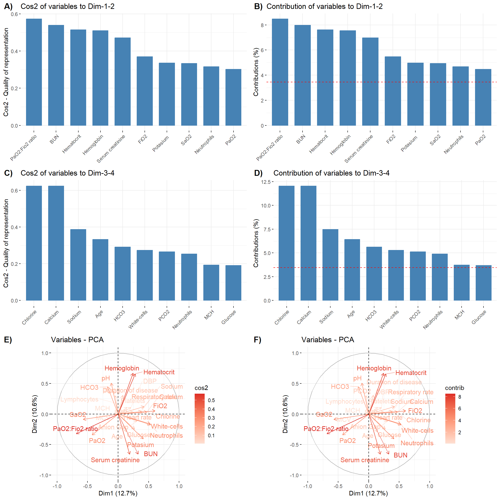
# Cos2 plot for the variables on dimensions 1 and 2
fviz_cos2(pca_data, choice = "var", axes = 1:2)
# Plot of 10 variables with highest cos2 on PC1 and PC2
a <- fviz_cos2(pca_data, choice = "var", axes = 1:2, top = 10)
# Plot of 10 variables with highest cos2 on PC3 and PC4
b <- fviz_cos2(pca_data, choice = "var", axes = 3:4, top = 10)
# Correlations circle and color by cos2 values
c <- fviz_pca_var(
pca_data,
col.var = "cos2",
gradient.cols = c("#fee0d2", "#fc9272", "#de2d26"),
repel = TRUE) # repel = TRUE avoid text overlapping
# Contributions of the variables on the dimensions
head(var$contrib, 5) Dim.1 Dim.2 Dim.3 Dim.4 Dim.5
Age 0.5181309 2.78360214 3.79936060 9.2086043 7.058888e-05
Duration of disease 0.1616898 3.07558701 0.90491292 0.7106513 8.577827e-01
Respiratory rate 4.9218010 0.50219238 2.36856589 0.1224457 1.798942e-02
Heart rate 4.3738409 0.03818468 0.54772216 4.3896471 1.244480e+00
SBP 1.5338774 0.04418084 0.06269356 0.9277624 8.091241e+00
Dim.6 Dim.7 Dim.8 Dim.9 Dim.10
Age 0.1649038 3.42862484 1.0353084 1.7688313 3.6426396
Duration of disease 1.2932283 21.87543369 2.4097273 0.7276085 13.7172526
Respiratory rate 0.3031059 0.04522913 1.6004629 22.8521289 0.4092309
Heart rate 0.2022802 4.52927154 0.9191582 1.7781135 20.4352615
SBP 25.9033638 0.58742684 1.7099003 0.2604503 1.3862628
Dim.11 Dim.12 Dim.13 Dim.14 Dim.15
Age 8.1601804 6.57220525 0.5044469 0.3104996 2.07145763
Duration of disease 2.2107104 6.58961690 7.2965904 0.9072165 6.02428919
Respiratory rate 6.1292354 0.06468981 3.0201231 1.4760797 34.41436886
Heart rate 0.3531918 0.37382378 2.5917874 14.1167760 0.00490985
SBP 3.8893134 1.69598933 4.2268211 0.1590938 0.01013533
Dim.16 Dim.17 Dim.18 Dim.19 Dim.20
Age 29.07863997 0.45888079 2.59892072 6.2533740 4.6449735
Duration of disease 0.29412817 2.02133766 5.25708164 4.4654223 17.6746253
Respiratory rate 0.04549536 0.66722047 0.17787021 11.1793380 4.5177506
Heart rate 25.63325177 0.02717927 0.92343656 16.0971429 0.0833343
SBP 0.76154302 0.76162359 0.01520907 0.6106749 0.2981875
Dim.21 Dim.22 Dim.23 Dim.24 Dim.25
Age 0.018683576 6.7632954 1.03496718 4.02343740 1.0433952
Duration of disease 0.001135102 0.1425201 0.46439233 0.01701065 0.3852666
Respiratory rate 1.862370277 2.0592046 0.09500803 0.55253558 0.5628110
Heart rate 0.084692040 0.6065784 0.14128093 0.18117465 0.1319439
SBP 21.983051277 19.2628975 2.36718714 2.45819694 0.8862291
Dim.26 Dim.27 Dim.28 Dim.29
Age 0.076092691 0.0345646035 0.0019087414 0.000000e+00
Duration of disease 0.500444000 0.0134579160 0.0008807954 3.595821e-31
Respiratory rate 0.008897681 0.0009987114 0.0228503906 5.841473e-31
Heart rate 0.177577129 0.0103334038 0.0036264018 1.287897e-31
SBP 0.096363803 0.0074828891 0.0028409166 2.386563e-31# Correlation matrix - contributions of the variables
corrplot(var$contrib, is.corr=FALSE)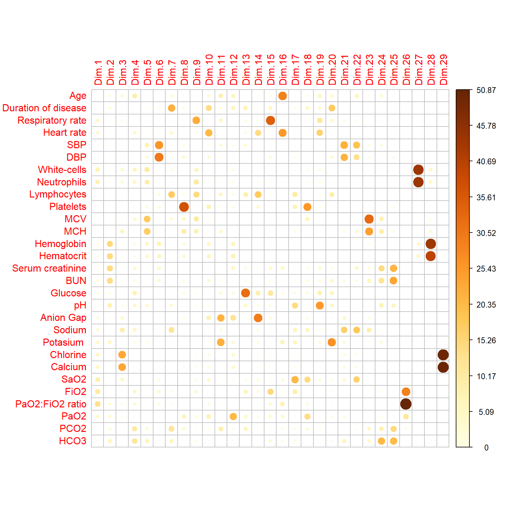
# Contribution plot of the top 10 variables on PC1
fviz_contrib(pca_data, choice = "var", axes = 1, top = 10)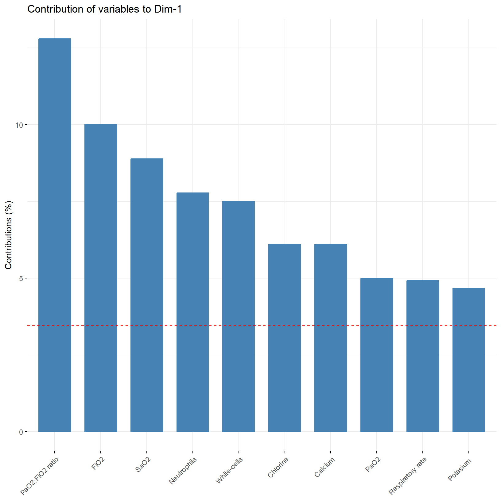
# Contribution plot of the top 10 variables on PC2
fviz_contrib(pca_data, choice = "var", axes = 2, top = 10)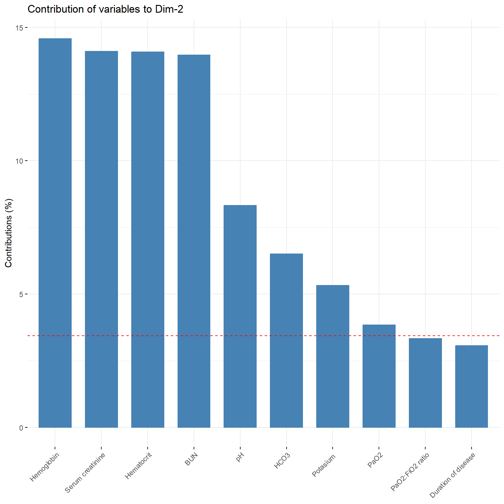
# Plot of 10 variables with the highest contribution on PC1 and PC2
d <- fviz_contrib(pca_data, choice = "var", axes = 1:2, top = 10)
# Plot of 10 variables with the highest contribution on PC3 and PC4
e <- fviz_contrib(pca_data, choice = "var", axes = 3:4, top = 10)
# Correlations circle and color by contributions values
f <- fviz_pca_var(
pca_data,
col.var = "contrib",
gradient.cols = c("#fee0d2", "#fc9272", "#de2d26"),
repel = TRUE)# Arrange multiple plots
ggpubr::ggarrange(a, d, b, e, c, f, ncol = 2, nrow = 3,
labels = c("A)", "B)", "C)", "D)", "E)", "F)"),
legend = "right")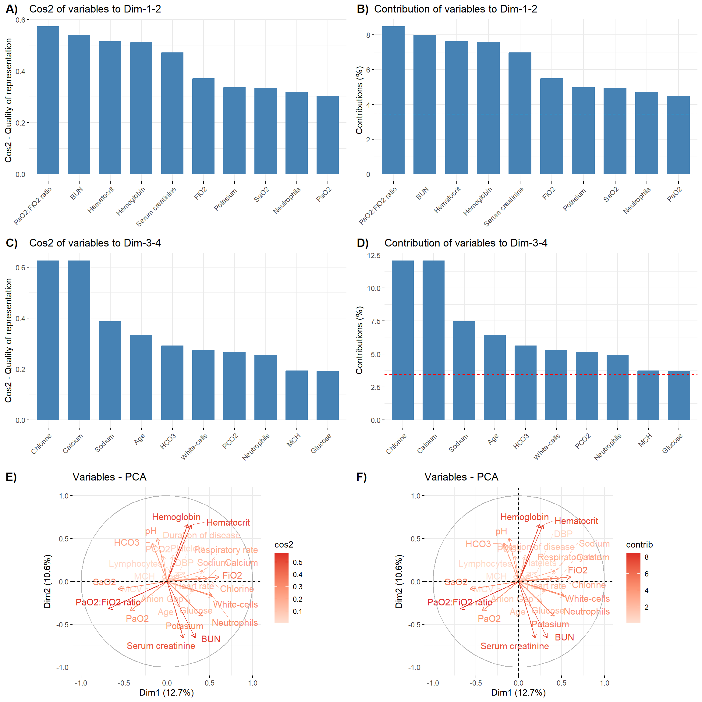
# Extract results for the individuals
ind <- get_pca_ind(pca_data)
# Coordinates for the individuals
head(ind$coord, 5)
# Cos2 of the individuals on dimensions
head(ind$cos2, 5)
# Plot of 30 individuals with the highest cos2 on PC1 and PC2
a <- fviz_cos2(pca_data, choice = "ind", axes = 1:2, top = 30)
# Plot of 30 individuals with the highest cos2 on PC3 and PC4
b <- fviz_cos2(pca_data, choice = "ind", axes = 3:4, top = 30)
# Correlations circle and color by cos2 values
c <- fviz_pca_ind(
pca_data,
col.ind = "cos2",
gradient.cols = c("#fee0d2", "#fc9272", "#de2d26"),
repel = TRUE)
# Contributions of the individuals on dimensions
head(ind$contrib, 5)
# Plot of 30 individuals with the highest contribution on PC1 and PC2
d <- fviz_contrib(pca_data, choice = "ind", axes = 1:2, top = 30)
# Plot of 30 individuals with the highest contribution on PC3 and PC4
e <- fviz_contrib(pca_data, choice = "ind", axes = 3:4, top = 30)
# Correlations circle and color by contributions values
f <- fviz_pca_ind(
pca_data,
col.ind = "contrib",
gradient.cols = c("#fee0d2", "#fc9272", "#de2d26"))# Arrange multiple plots
ggpubr::ggarrange(a, d, b, e, c, f, ncol = 2, nrow = 3,
labels = c("A)", "B)", "C)", "D)", "E)", "F)"),
legend = "right")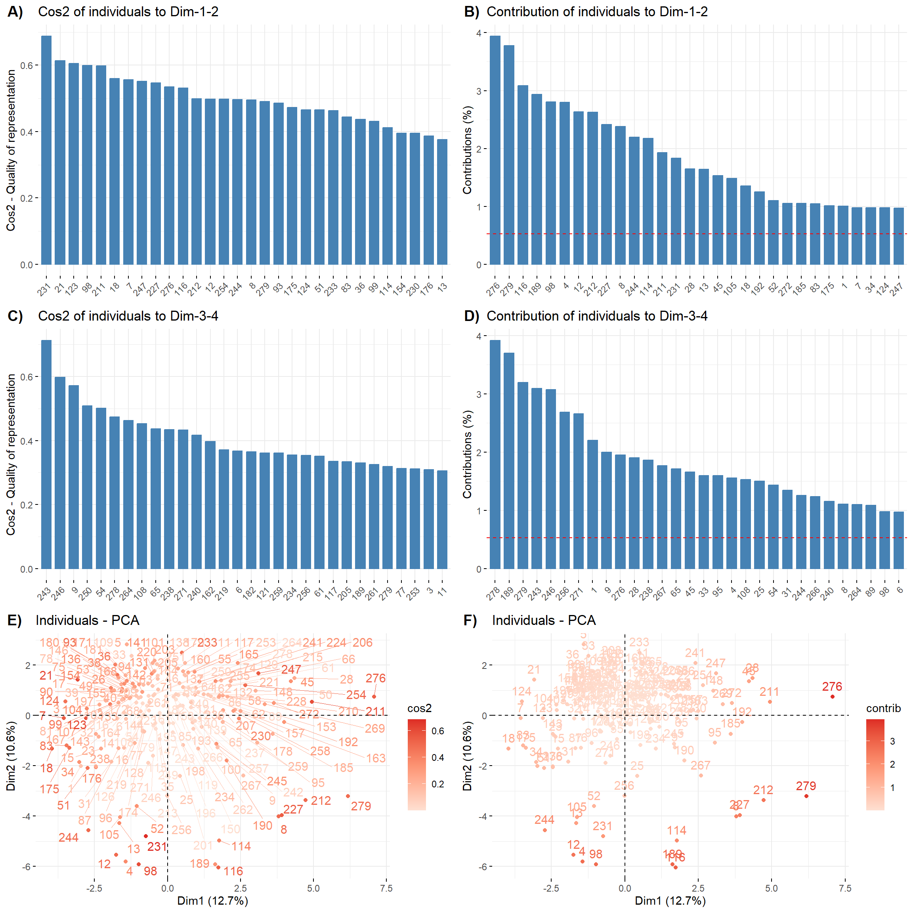
# Plot of individuals and color by outcome on PC1 and PC2
ind.graph <- fviz_pca_ind(
pca_data,
axes = 1:2,
geom.ind = "point",
col.ind = numerical$a_f,
palette = "igv",
addEllipses = TRUE,
mean.point = FALSE,
ggtheme = theme_pubr())
a <- ggpubr::ggpar(
ind.graph,
title = element_blank(),
xlab = "PC1 (12.7%)",
ylab = "PC2 (10.6%)",
legend.title = "Group",
legend = "right",
font.legend = c(12, "black"))
# Plot of individuals and color by outcome on PC3 and PC4
ind.graph <- fviz_pca_ind(
pca_data,
axes = 3:4,
geom.ind = "point",
col.ind = numerical$a_f,
palette = "igv",
addEllipses = TRUE,
mean.point = FALSE,
ggtheme = theme_pubr())
b <- ggpubr::ggpar(
ind.graph,
title = element_blank(),
xlab = "PC3 (9.2%)",
ylab = "PC2 (8.6%)",
legend.title = "Group",
legend = "right",
font.legend = c(12, "black"))# Arrange multiple plots
ggpubr::ggarrange(a, b, ncol = 2, nrow = 1, labels = c("A)", "B)"),
legend = "bottom", common.legend = TRUE)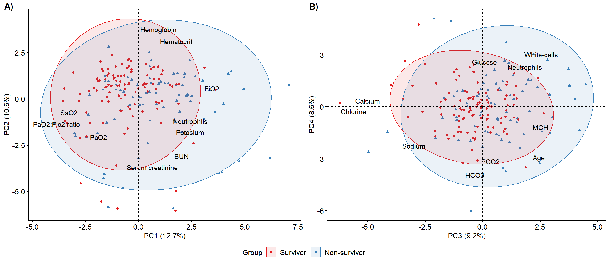
# Contributions on PC1 and PC2
a <- fviz_pca_biplot(
pca_data,
# Dimensions 1 and 2
axes = 1:2,
# Individuals
col.ind = numerical$a_f,
geom.ind = "point",
col.var = "black",
# Top 10 contributing variables
geom.var = "text",
select.var = list(contrib = 10),
# Theme
palette = "Set1",
addEllipses = TRUE,
mean.point = FALSE,
repel = TRUE,
ggtheme = theme_pubr())
# Plot parameters
a1 <- ggpubr::ggpar(
a,
title = element_blank(),
xlab = "PC1 (12.7%)",
ylab = "PC2 (10.6%)",
legend.title = "Group",
font.legend = c(12, "black"))
# Contributions on PC3 and PC4
b <- fviz_pca_biplot(
pca_data,
# Dimensions 3 and 4
axes = 3:4,
# Individuals
col.ind = numerical$a_f,
geom.ind = "point",
col.var = "black",
# Top 10 contributing variables
geom.var = "text",
select.var = list(contrib = 10),
# Theme
palette = "Set1",
addEllipses = TRUE,
mean.point = FALSE,
repel = TRUE,
ggtheme = theme_pubr())
# Plot parameters
b1 <- ggpubr::ggpar(
b,
title = element_blank(),
xlab = "PC3 (9.2%)",
ylab = "PC4 (8.6%)",
legend.title = "Group",
font.legend = c(12, "black"))
# Arrange multiple plots
F1 <- ggpubr::ggarrange(a1, b1, ncol = 2, nrow = 1, labels = c("A)", "B)"),
legend = "bottom", common.legend = TRUE)
# View
F1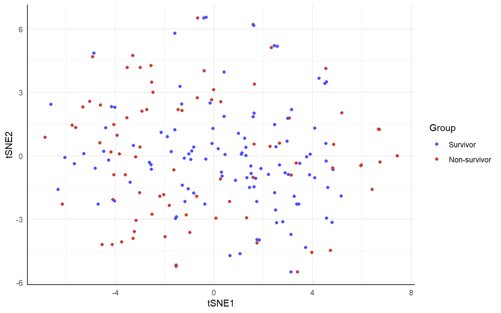

It’s recommended to perform PCA before K-means clustering because speeds up the clustering process and conserve computational resources, especially on large datasets. PCA optimizes clustering by reducing noise and redundant information, which helps K-means clustering focus on relevant features, leading to more accurate cluster assignments. Dimension reduction captures important information into few dimensions, this reduces the number of features and preserves most of the variation, making subsequent clustering more efficient and improves interpretation.
tsne_numerical <- data |>
dplyr::select(where(is.numeric), -t_de_enfermedad, a_f) |>
na.omit() |>
mutate(ID = row_number())
meta_numerical <- tsne_numerical |>
dplyr::select(ID, a_f)
tSNE_fit <- tsne_numerical |>
dplyr::select(where(is.numeric)) |>
scale() |>
Rtsne()
tSNE_df <- tSNE_fit$Y %>%
as.data.frame() %>%
rename(tSNE1 = "V1",
tSNE2 = "V2") %>%
mutate(ID = row_number())
tSNE_df <- tSNE_df |>
inner_join(meta_numerical, by = "ID")
tSNE_df |>
ggplot(aes(x = tSNE1,
y = tSNE2,
color = a_f)) +
geom_point() +
scale_color_igv() +
labs(color = "Group") +
theme_minimal() +
theme(legend.position = "right",
axis.line = element_line(color = "black"))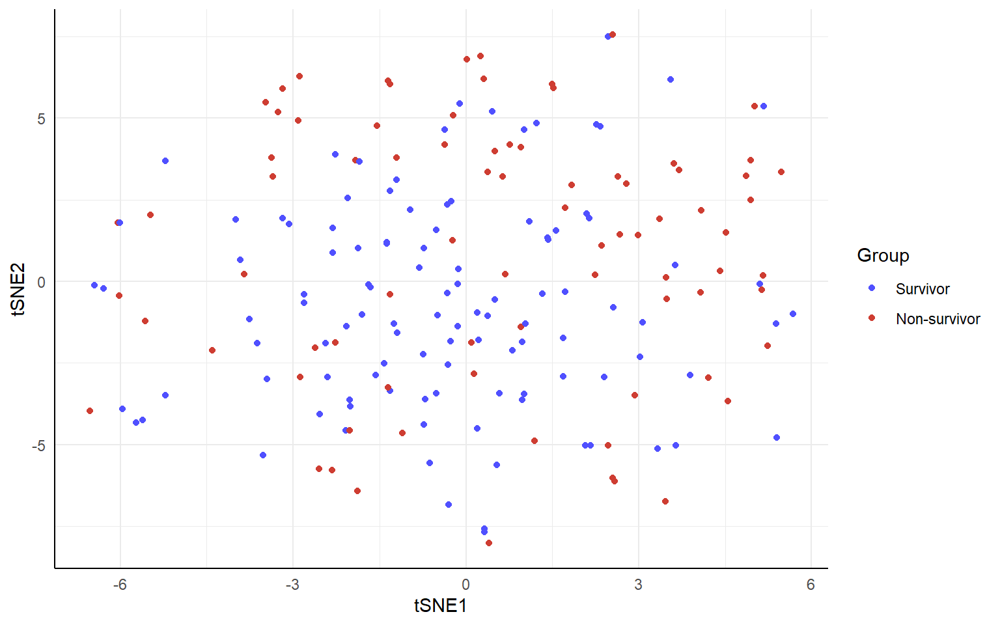
All distances are in inches
sect_properties <- prop_section(
type = "continuous",
page_margins = page_mar(bottom = 1, top = 1, right = 1, left = 1))# Save tables
save_as_docx(
flex_table_1,
path = stringr::str_glue(outputs_dir, "Table_1.docx"),
align = "center")
save_as_docx(
flex_table_2,
path = stringr::str_glue(outputs_dir, "Table_2.docx"),
align = "center")
save_as_docx(
flex_table_3,
path = stringr::str_glue(outputs_dir, "Table_3.docx"),
align = "center")# Save supplementary figure 1 (EPS)
ggsave(
plot = FS1,
filename = stringr::str_glue(outputs_dir, "FIG_S1.eps"),
width = 12,
height = 12,
units = "in")
# Save supplementary figure 1 (PNG)
ggsave(
plot = FS1,
filename = stringr::str_glue(outputs_dir, "FIG_S1.png"),
width = 12,
height = 12,
dpi = 300,
units = "in")
# Save supplementary figure 1 (JPEG)
ggsave(
plot = FS1,
filename = stringr::str_glue(outputs_dir, "FIG_S1.jpeg"),
width = 12,
height = 12,
dpi = 300,
units = "in")
# Save supplementary figure 1 grey (JPEG)
ggsave(
plot = FS1_grey,
filename = stringr::str_glue(outputs_dir, "FIG_S1_grey.jpeg"),
width = 12,
height = 12,
dpi = 500,
units = "in")
# Save figure 2 (EPS)
ggsave(
plot = F1,
filename = stringr::str_glue(outputs_dir, "FIG2.eps"),
width = 14,
height = 6,
units = "in")
# Save figure 2 (PNG)
ggsave(
plot = F1,
filename = stringr::str_glue(outputs_dir, "FIG2.png"),
width = 14,
height = 6,
dpi = 300,
units = "in")
# Save figure 2 (JPEG)
ggsave(
plot = F1,
filename = stringr::str_glue(outputs_dir, "FIG2.jpeg"),
width = 14,
height = 6,
dpi = 300,
units = "in")
# Save figure 2 grey (JPEG)
ggsave(
plot = F1_grey,
filename = stringr::str_glue(outputs_dir, "FIG2_grey.jpeg"),
width = 14,
height = 6,
dpi = 500,
units = "in")